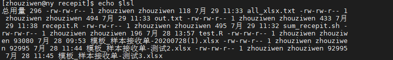
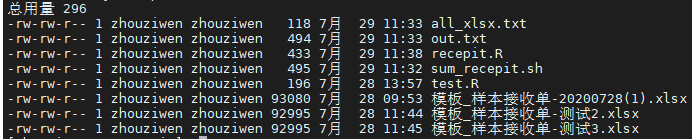
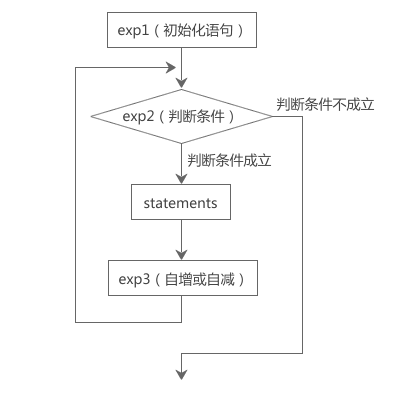
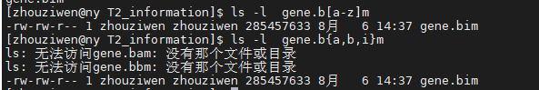
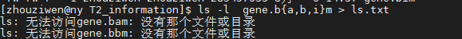
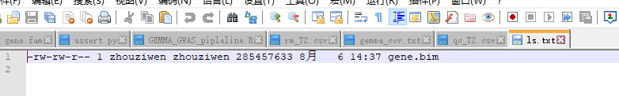

<!DOCTYPE html>


<html lang="zh-CN">


<head>
  <meta charset="utf-8" />
    
  <meta name="viewport" content="width=device-width, initial-scale=1, maximum-scale=1" />
  <title>
    shell编程 |  VincereZhou&#39;s blog
  </title>
  <meta name="generator" content="hexo-theme-ayer">
  
  <link rel="shortcut icon" href="/images/mojie.jpg" />
  
  
<link rel="stylesheet" href="/dist/main.css">

  <link rel="stylesheet" href="https://cdn.jsdelivr.net/gh/Shen-Yu/cdn/css/remixicon.min.css">
  
<link rel="stylesheet" href="/css/custom.css">

  
  <script src="https://cdn.jsdelivr.net/npm/pace-js@1.0.2/pace.min.js"></script>
  
  

  

<link rel="alternate" href="/atom.xml" title="VincereZhou's blog" type="application/atom+xml">
</head>

</html>

<body>
  <div id="app">
    
      
    <main class="content on">
      <section class="outer">
  <article
  id="post-shell编程"
  class="article article-type-post"
  itemscope
  itemprop="blogPost"
  data-scroll-reveal
>
  <div class="article-inner">
    
    <header class="article-header">
       
<h1 class="article-title sea-center" style="border-left:0" itemprop="name">
  shell编程
</h1>
 

    </header>
     
    <div class="article-meta">
      <a href="/posts/e5954c2f/" class="article-date">
  <time datetime="2021-07-15T09:11:44.000Z" itemprop="datePublished">2021-07-15</time>
</a> 
  <div class="article-category">
    <a class="article-category-link" href="/categories/%E6%95%B0%E6%8D%AE%E5%88%86%E6%9E%90/">数据分析</a> / <a class="article-category-link" href="/categories/%E6%95%B0%E6%8D%AE%E5%88%86%E6%9E%90/shell/">shell</a>
  </div>
  
<div class="word_count">
    <span class="post-time">
        <span class="post-meta-item-icon">
            <i class="ri-quill-pen-line"></i>
            <span class="post-meta-item-text"> 字数统计:</span>
            <span class="post-count">18.3k</span>
        </span>
    </span>

    <span class="post-time">
        &nbsp; | &nbsp;
        <span class="post-meta-item-icon">
            <i class="ri-book-open-line"></i>
            <span class="post-meta-item-text"> 阅读时长≈</span>
            <span class="post-count">70 分钟</span>
        </span>
    </span>
</div>
 
    </div>
      
    <div class="tocbot"></div>


  
    <div class="article-entry" itemprop="articleBody">
       
  <blockquote>
<p>如果真的有 python 基础（或者任何一门编程语言基础），就不可能会觉得 shell “难”。<br>
可以说几十分钟就能看完的。shell 虽然非常之恶劣，有很多的恶心人的大缺陷，有正经编程经验的人难以忍受。但是它作为胶水语言整合 CLI 程序还是无比强大的，比 python 原生，自然也更方便。</p>
<p>作者：绅士喵<br>
来源：知乎</p>
</blockquote>
<p>这段话有道理。</p>
<span id="more"></span>
<h2 id="资料来源">资料来源</h2>
<p><a target="_blank" rel="noopener" href="http://c.biancheng.net/shell/">Shell脚本：Linux Shell脚本学习指南（超详细）</a></p>
<h2 id="shell-基础">shell 基础</h2>
<h3 id="Shell-是一种脚本语言">Shell 是一种脚本语言</h3>
<p>任何代码最终都要被“翻译”成二进制的形式才能在计算机中执行。</p>
<p>有的编程语言，如 C/C++、Pascal、Go语言、汇编等，必须在程序运行之前将所有代码都翻译成二进制形式，也就是生成可执行文件，用户拿到的是最终生成的可执行文件，看不到源码。</p>
<p>这个过程叫做编译（Compile），这样的编程语言叫做编译型语言，完成编译过程的软件叫做编译器（Compiler）。</p>
<p>而有的编程语言，如 Shell、<a target="_blank" rel="noopener" href="http://c.biancheng.net/js/">JavaScript</a>、Python、<a target="_blank" rel="noopener" href="http://c.biancheng.net/php/">PHP</a>等，需要一边执行一边翻译，不会生成任何可执行文件，用户必须拿到源码才能运行程序。程序运行后会即时翻译，翻译完一部分执行一部分，不用等到所有代码都翻译完。</p>
<p>这个过程叫做解释，这样的编程语言叫做解释型语言或者脚本语言（Script），完成解释过程的软件叫做解释器。</p>
<p>编译型语言的优点是执行速度快、对硬件要求低、保密性好，适合开发操作系统、大型应用程序、数据库等。</p>
<p>脚本语言的优点是使用灵活、部署容易、跨平台性好，非常适合 Web 开发以及小工具的制作。</p>
<p>Shell 就是一种脚本语言，我们编写完源码后不用编译，直接运行源码即可。</p>
<h3 id="执行-shell-脚本">执行 shell 脚本</h3>
<h4 id="在新进程中运行shell脚本">在新进程中运行shell脚本</h4>
<p>新进程就是说执行shell文件时，会开启一个新的进程，会有一个新的PID。</p>
<h5 id="1-将-Shell-脚本作为程序运行">1) 将 Shell 脚本作为程序运行</h5>
<figure class="highlight plain"><table><tr><td class="gutter"><pre><span class="line">1</span><br><span class="line">2</span><br><span class="line">3</span><br></pre></td><td class="code"><pre><span class="line">cd demo </span><br><span class="line">chmod +x .&#x2F;test.sh</span><br><span class="line">.&#x2F;test.sh</span><br></pre></td></tr></table></figure>
<blockquote>
<p>第 3 行中，<code>./</code>表示当前目录，整条命令的意思是执行当前目录下的 <a target="_blank" rel="noopener" href="http://test.sh">test.sh</a> 脚本。如果不写<code>./</code>，Linux 会到系统路径（由 PATH 环境变量指定）下查找 <a target="_blank" rel="noopener" href="http://test.sh">test.sh</a>，而系统路径下显然不存在这个脚本，所以会执行失败。</p>
<p>通过这种方式运行脚本，脚本文件第一行的<code>#!/bin/bash</code>一定要写对，好让系统查找到正确的解释器。</p>
</blockquote>
<h5 id="2-将-Shell-脚本作为参数传递给-Bash-解释器">2) 将 Shell 脚本作为参数传递给 Bash 解释器</h5>
<p>直接运行bash 解释器，将脚本文件的名字作为参数传递给bash</p>
<figure class="highlight plain"><table><tr><td class="gutter"><pre><span class="line">1</span><br><span class="line">2</span><br></pre></td><td class="code"><pre><span class="line">cd demo </span><br><span class="line">&#x2F;bin&#x2F;bash test.sh</span><br></pre></td></tr></table></figure>
<p>通过这种方式运行脚本，不需要在脚本文件的第一行指定解释器信息，写了也没用。</p>
<p>更加简洁的写法是运行 bash 命令。bash 是一个外部命令，Shell 会在 /bin 目录中找到对应的应用程序，也即 /bin/bash。</p>
<p>好像sh 和 bash 不是一码事，以后还是用bash吧</p>
<figure class="highlight plain"><table><tr><td class="gutter"><pre><span class="line">1</span><br><span class="line">2</span><br></pre></td><td class="code"><pre><span class="line">cd demo </span><br><span class="line">bash test.sh</span><br></pre></td></tr></table></figure>
<h3 id="在当前进程中运行-shell-脚本">在当前进程中运行 shell 脚本</h3>
<p>这里需要引入一个新的命令——source 命令。source 是 <a target="_blank" rel="noopener" href="http://c.biancheng.net/view/1136.html">Shell 内置命令</a>的一种，它会读取脚本文件中的代码，并依次执行所有语句。你也可以理解为，source 命令会强制执行脚本文件中的全部命令，而忽略脚本文件的权限。</p>
<p>说白了，source命令就两点：</p>
<ul>
<li>PID不变</li>
<li>强制执行</li>
</ul>
<p>source命令可以写成</p>
<figure class="highlight plain"><table><tr><td class="gutter"><pre><span class="line">1</span><br></pre></td><td class="code"><pre><span class="line">. filename</span><br></pre></td></tr></table></figure>
<p>注意 . 和 文件名中间有一个空格。</p>
<p>使用 source 命令不用给脚本增加执行权限，并且写不写<code>./</code>都行</p>
<h2 id="shell-编程">shell 编程</h2>
<h3 id="shell-变量">shell 变量</h3>
<p><strong>在 Bash shell 中，每一个变量的值都是字符串，无论你给变量赋值时有没有使用引号，值都会以字符串的形式存储。</strong></p>
<p>这意味着，Bash shell 在默认情况下不会区分变量类型，即使你将整数和小数赋值给变量，它们也会被视为字符串，这一点和大部分的编程语言不同。例如在C语言或者 <a target="_blank" rel="noopener" href="http://c.biancheng.net/cplus/">C++</a> 中，变量分为整数、小数、字符串、布尔等多种类型。</p>
<p>当然，如果有必要，你也可以使用 <a target="_blank" rel="noopener" href="http://c.biancheng.net/view/2709.html">Shell declare</a> 关键字显式定义变量的类型，但在一般情况下没有这个需求，Shell 开发者在编写代码时自行注意值的类型即可。</p>
<h4 id="变量类型">变量类型</h4>
<ul>
<li><strong>局部变量</strong> - 局部变量是仅在某个脚本内部有效的变量。它们不能被其他的程序和脚本访问。</li>
<li><strong>环境变量</strong> - 环境变量是对当前 shell 会话内所有的程序或脚本都可见的变量。创建它们跟创建局部变量类似，但使用的是 <code>export</code> 关键字，shell 脚本也可以定义环境变量。</li>
</ul>
<p>一般说的都是局部变量。</p>
<h4 id="定义变量">定义变量</h4>
<figure class="highlight plain"><table><tr><td class="gutter"><pre><span class="line">1</span><br><span class="line">2</span><br><span class="line">3</span><br></pre></td><td class="code"><pre><span class="line">variable&#x3D;value</span><br><span class="line">variable&#x3D;&#39;value&#39;</span><br><span class="line">variable&#x3D;&quot;value&quot;</span><br></pre></td></tr></table></figure>
<p>variable 是变量名，value 是赋给变量的值。如果 value 不包含任何空白符（例如空格、Tab 缩进等），那么可以不使用引号；如果 value 包含了空白符，那么就必须使用引号包围起来。使用单引号和使用双引号也是有区别的，稍后我们会详细说明。</p>
<p>注意，赋值号<code>=</code>的周围不能有空格</p>
<p>Shell 变量的命名规范和大部分编程语言都一样：</p>
<ul>
<li>变量名由数字、字母、下划线组成；</li>
<li><strong>必须以字母或者下划线开头；</strong></li>
<li>不能使用 Shell 里的关键字（通过 help 命令可以查看保留关键字）。</li>
</ul>
<h4 id="使用变量">使用变量</h4>
<p>使用一个定义过的变量，只要在变量名前面加美元符号<code>$</code>即可，如：</p>
<figure class="highlight plain"><table><tr><td class="gutter"><pre><span class="line">1</span><br><span class="line">2</span><br><span class="line">3</span><br><span class="line">4</span><br></pre></td><td class="code"><pre><span class="line">author&#x3D;&quot;严长生&quot;</span><br><span class="line">echo $author</span><br><span class="line">echo $&#123;author&#125;</span><br><span class="line">echo &quot;$&#123;author&#125;&quot; #用于多行或多个空字符</span><br></pre></td></tr></table></figure>
<p>变量名外面的花括号<code>&#123; &#125;</code>是可选的，加不加都行，加花括号是为了帮助解释器识别变量的边界，比如下面这种情况：</p>
<figure class="highlight plain"><table><tr><td class="gutter"><pre><span class="line">1</span><br><span class="line">2</span><br></pre></td><td class="code"><pre><span class="line">skill&#x3D;&quot;Java&quot;</span><br><span class="line">echo &quot;I am good at $&#123;skill&#125;Script&quot;</span><br></pre></td></tr></table></figure>
<p>如果不给 skill 变量加花括号，写成<code>echo &quot;I am good at $skillScript&quot;</code>，解释器就会把 $skillScript 当成一个变量（其值为空），代码执行结果就不是我们期望的样子了 ( I am good at ) 。</p>
<p><strong>推荐给所有变量加上花括号<code>&#123; &#125;</code>，这是个良好的编程习惯。</strong></p>
<h5 id="单引号和双引号的区别">单引号和双引号的区别</h5>
<figure class="highlight plain"><table><tr><td class="gutter"><pre><span class="line">1</span><br><span class="line">2</span><br><span class="line">3</span><br><span class="line">4</span><br><span class="line">5</span><br><span class="line">6</span><br></pre></td><td class="code"><pre><span class="line">#!&#x2F;bin&#x2F;bash</span><br><span class="line">url&#x3D;&quot;http:&#x2F;&#x2F;c.biancheng.net&quot;</span><br><span class="line">website1&#x3D;&#39;C语言中文网：$&#123;url&#125;&#39;</span><br><span class="line">website2&#x3D;&quot;C语言中文网：$&#123;url&#125;&quot;</span><br><span class="line">echo $website1</span><br><span class="line">echo $website2</span><br></pre></td></tr></table></figure>
<p>运行结果：<br>
C语言中文网：${url}<br>
C语言中文网：<a target="_blank" rel="noopener" href="http://c.biancheng.net">http://c.biancheng.net</a></p>
<p>以单引号<code>' '</code>包围变量的值时，单引号里面是什么就输出什么，即使内容中有变量和命令（命令需要反引起来）也会把它们原样输出。这种方式比较适合定义显示纯字符串的情况，即不希望解析变量、命令等的场景。</p>
<p>以双引号<code>&quot; &quot;</code>包围变量的值时，输出时会先解析里面的变量和命令，而不是把双引号中的变量名和命令原样输出。这种方式比较适合字符串中附带有变量和命令并且想将其解析后再输出的变量定义。</p>
<p><strong>单引号原封不动，双引号解析变量</strong></p>
<p><strong>一般推荐使用双引号</strong></p>
<h4 id="将命令的结果赋值给变量">将命令的结果赋值给变量</h4>
<p>Shell 也支持将命令的执行结果赋值给变量，常见的有以下两种方式：</p>
<figure class="highlight plain"><table><tr><td class="gutter"><pre><span class="line">1</span><br><span class="line">2</span><br></pre></td><td class="code"><pre><span class="line">variable&#x3D;&#96;command&#96;</span><br><span class="line">variable&#x3D;$(command)</span><br></pre></td></tr></table></figure>
<p>第一种方式把命令用反引号<code> </code>（位于 Esc 键的下方）包围起来，反引号和单引号非常相似，容易产生混淆，所以不推荐使用这种方式；第二种方式把命令用<code>$()</code>包围起来，区分更加明显，所以推荐使用这种方式。</p>
<figure class="highlight plain"><table><tr><td class="gutter"><pre><span class="line">1</span><br><span class="line">2</span><br><span class="line">3</span><br><span class="line">4</span><br></pre></td><td class="code"><pre><span class="line">cd demo </span><br><span class="line">log&#x3D;$(cat log.txt)</span><br><span class="line">echo $log</span><br><span class="line">	严长生正在编写Shell教程，教程地址：http:&#x2F;&#x2F;c.biancheng.net&#x2F;shell&#x2F;</span><br></pre></td></tr></table></figure>
<p>另外 $() 支持嵌套，如下面的例子演示了使用计算 ls 命令列出的第一个文件的行数，这里使用了两层嵌套。</p>
<figure class="highlight plain"><table><tr><td class="gutter"><pre><span class="line">1</span><br><span class="line">2</span><br><span class="line">3</span><br></pre></td><td class="code"><pre><span class="line">Fir_File_Lines&#x3D;$(wc -l $(ls | sed -n &#39;1p&#39;))</span><br><span class="line">echo &quot;$Fir_File_Lines&quot;</span><br><span class="line">	# 36 anaconda-ks.cfg</span><br></pre></td></tr></table></figure>
<p>要注意的是，$() 仅在 Bash Shell 中有效，而反引号可在多种 Shell 中使用。所以这两种命令替换的方式各有特点，究竟选用哪种方式全看个人需求。</p>
<p><strong>注意$() 和 ${} 的区别</strong></p>
<p>注意，如果被替换的命令的输出内容包括多行（也即有换行符），或者含有多个连续的空白符，那么在输出变量时应该将变量用双引号包围，否则系统会使用默认的空白符来填充，这会导致换行无效，以及连续的空白符被压缩成一个。请看下面的代码：</p>
<p>lsl=$(ls -l)<br>
echo $lsl</p>
<p>结果如下，可以看到没有正常换行</p>
<p></p>
<p>echo ‘$lsl’</p>
<p>结果为 $lsl，可以看出单引号确实是原封不动。</p>
<p>echo “$lsl” 结果正常</p>
<p></p>
<h4 id="只读变量">只读变量</h4>
<p>先赋值，再使用 readonly 命令将变量定义为只读变量，只读变量的值不能改变。</p>
<figure class="highlight plain"><table><tr><td class="gutter"><pre><span class="line">1</span><br><span class="line">2</span><br></pre></td><td class="code"><pre><span class="line">zhou&#x3D;&#39;zhouziwen&#39;</span><br><span class="line">readonly zhou</span><br></pre></td></tr></table></figure>
<h4 id="删除变量">删除变量</h4>
<p>使用unset命令可以删除变量。</p>
<figure class="highlight plain"><table><tr><td class="gutter"><pre><span class="line">1</span><br></pre></td><td class="code"><pre><span class="line">unset variable_name</span><br></pre></td></tr></table></figure>
<p>变量被删除后不能再次使用；unset 命令不能删除只读变量。</p>
<figure class="highlight plain"><table><tr><td class="gutter"><pre><span class="line">1</span><br><span class="line">2</span><br><span class="line">3</span><br></pre></td><td class="code"><pre><span class="line">myUrl&#x3D;&quot;http:&#x2F;&#x2F;c.biancheng.net&#x2F;shell&#x2F;&quot;</span><br><span class="line">unset myUrl</span><br><span class="line">echo $myUrl</span><br></pre></td></tr></table></figure>
<h3 id="位置参数（命令行参数）">位置参数（命令行参数）</h3>
<p>运行 Shell 脚本文件时我们可以给它传递一些参数，这些参数在脚本文件内部可以使用<code>$n</code>的形式来接收，例如，$1 表示第一个参数，$2 表示第二个参数，依次类推。</p>
<p>同样，在调用函数时也可以传递参数。Shell 函数参数的传递和其它编程语言不同，没有所谓的形参和实参，在定义函数时也不用指明参数的名字和数目。换句话说，定义 Shell 函数时不能带参数，但是在调用函数时却可以传递参数，这些传递进来的参数，在函数内部就也使用<code>$n</code>的形式接收，例如，$1 表示第一个参数，$2 表示第二个参数，依次类推。</p>
<p>这种通过<code>$n</code>的形式来接收的参数，在 Shell 中称为位置参数。</p>
<p>在讲解<a target="_blank" rel="noopener" href="http://c.biancheng.net/view/743.html">变量的命名</a>时，我们提到：变量的名字必须以字母或者下划线开头，不能以数字开头；但是位置参数却偏偏是数字，这和变量的命名规则是相悖的，所以我们将它们视为“特殊变量”。</p>
<p>除了 $n，Shell 中还有 *、?、$$ 几个特殊参数，我们将在下节讲解。</p>
<h4 id="1-给脚本文件传递位置参数">1) 给脚本文件传递位置参数</h4>
<p>请编写下面的代码，并命名为 <a target="_blank" rel="noopener" href="http://test.sh">test.sh</a>：</p>
<figure class="highlight plain"><table><tr><td class="gutter"><pre><span class="line">1</span><br><span class="line">2</span><br><span class="line">3</span><br></pre></td><td class="code"><pre><span class="line">#!&#x2F;bin&#x2F;bash</span><br><span class="line">echo &quot;Language: $1&quot;</span><br><span class="line">echo &quot;URL: $2&quot;</span><br></pre></td></tr></table></figure>
<p>运行 <a target="_blank" rel="noopener" href="http://test.sh">test.sh</a>，并附带参数：</p>
<figure class="highlight plain"><table><tr><td class="gutter"><pre><span class="line">1</span><br><span class="line">2</span><br><span class="line">3</span><br><span class="line">4</span><br></pre></td><td class="code"><pre><span class="line">[mozhiyan@localhost ~]$ cd demo</span><br><span class="line">[mozhiyan@localhost demo]$ . .&#x2F;test.sh Shell http:&#x2F;&#x2F;c.biancheng.net&#x2F;shell&#x2F;</span><br><span class="line">Language: Shell</span><br><span class="line">URL: http:&#x2F;&#x2F;c.biancheng.net&#x2F;shell&#x2F;</span><br></pre></td></tr></table></figure>
<p>其中<code>Shell</code>是第一个位置参数，<code>http://c.biancheng.net/shell/</code>是第二个位置参数，两者之间以空格分隔。</p>
<h4 id="2-给函数传递位置参数">2) 给函数传递位置参数</h4>
<p>请编写下面的代码，并命名为 <a target="_blank" rel="noopener" href="http://test.sh">test.sh</a>：</p>
<figure class="highlight plain"><table><tr><td class="gutter"><pre><span class="line">1</span><br><span class="line">2</span><br><span class="line">3</span><br><span class="line">4</span><br><span class="line">5</span><br><span class="line">6</span><br><span class="line">7</span><br><span class="line">8</span><br></pre></td><td class="code"><pre><span class="line">#!&#x2F;bin&#x2F;bash</span><br><span class="line">#定义函数</span><br><span class="line">function func()&#123;</span><br><span class="line">	echo &quot;Language: $1&quot;    </span><br><span class="line">	echo &quot;URL: $2&quot;</span><br><span class="line">&#125;</span><br><span class="line">#调用函数</span><br><span class="line">func C++ http:&#x2F;&#x2F;c.biancheng.net&#x2F;cplus&#x2F;</span><br></pre></td></tr></table></figure>
<p>运行 <a target="_blank" rel="noopener" href="http://test.sh">test.sh</a>：</p>
<figure class="highlight plain"><table><tr><td class="gutter"><pre><span class="line">1</span><br><span class="line">2</span><br><span class="line">3</span><br><span class="line">4</span><br></pre></td><td class="code"><pre><span class="line">[mozhiyan@localhost ~]$ cd demo</span><br><span class="line">[mozhiyan@localhost demo]$ . .&#x2F;test.sh</span><br><span class="line">Language: C++</span><br><span class="line">URL: http:&#x2F;&#x2F;c.biancheng.net&#x2F;cplus&#x2F;</span><br></pre></td></tr></table></figure>
<h4 id="注意事项">注意事项</h4>
<p>如果参数个数太多，达到或者超过了 10 个，那么就得用<code>$&#123;n&#125;</code>的形式来接收了，例如 {23}。<code>&#123; &#125;</code>的作用是为了帮助解释器识别参数的边界，这跟使用变量时加<code>&#123; &#125;</code>是一样的效果。</p>
<p><strong>$1 和 ${1} 是一样的</strong></p>
<h3 id="特殊变量：Shell-、-、-、-、">特殊变量：Shell *、?、$$</h3>
<table>
<thead>
<tr>
<th>变量</th>
<th>含义</th>
</tr>
</thead>
<tbody>
<tr>
<td>$0</td>
<td>当前脚本的文件名。</td>
</tr>
<tr>
<td>$n（n≥1）</td>
<td>传递给脚本或函数的参数。n 是一个数字，表示第几个参数。例如，第一个参数是 $1，第二个参数是 $2。</td>
</tr>
<tr>
<td>$#</td>
<td>传递给脚本或函数的参数个数。</td>
</tr>
<tr>
<td>$*</td>
<td>传递给脚本或函数的所有参数。</td>
</tr>
<tr>
<td>$@</td>
<td>传递给脚本或函数的所有参数。当被双引号<code>&quot; &quot;</code>包含时，$@ 与 $* 稍有不同，我们将在《<a target="_blank" rel="noopener" href="http://c.biancheng.net/view/vip_4559.html">Shell @的区别</a>》一节中详细讲解。</td>
</tr>
<tr>
<td>$?</td>
<td>上个命令的退出状态，或函数的返回值，我们将在《<a target="_blank" rel="noopener" href="http://c.biancheng.net/view/808.html">Shell $?</a>》一节中详细讲解。</td>
</tr>
<tr>
<td>$$</td>
<td>当前 Shell 进程 ID。对于 Shell 脚本，就是这些脚本所在的进程 ID。</td>
</tr>
</tbody>
</table>
<h3 id="：获取函数返回值或者上一个命令的退出状态">$?：获取函数返回值或者上一个命令的退出状态</h3>
<p>$? 是一个特殊变量，用来获取上一个命令的退出状态，或者上一个函数的返回值。</p>
<p>所谓退出状态，就是上一个命令执行后的返回结果。退出状态是一个数字，一般情况下，<strong>大部分命令执行成功会返回 0，失败返回 1</strong>，这和C语言的 main() 函数是类似的。</p>
<p>不过，也有一些命令返回其他值，表示不同类型的错误。</p>
<h4 id="1-获取上一个命令的退出状态">1) $? 获取上一个命令的退出状态</h4>
<p>编写下面的代码，并保存为 <a target="_blank" rel="noopener" href="http://test.sh">test.sh</a>：</p>
<figure class="highlight plain"><table><tr><td class="gutter"><pre><span class="line">1</span><br><span class="line">2</span><br><span class="line">3</span><br><span class="line">4</span><br><span class="line">5</span><br><span class="line">6</span><br></pre></td><td class="code"><pre><span class="line">#!&#x2F;bin&#x2F;bash</span><br><span class="line">if [ &quot;$1&quot; &#x3D;&#x3D; 100 ]</span><br><span class="line">then</span><br><span class="line">	exit 0  #参数正确，退出状态为0</span><br><span class="line">else</span><br><span class="line">	exit 1  #参数错误，退出状态1fi</span><br></pre></td></tr></table></figure>
<p><code>exit</code>表示退出当前 Shell 进程，我们必须在新进程中运行 <a target="_blank" rel="noopener" href="http://test.sh">test.sh</a>，否则当前 Shell 会话（终端窗口）会被关闭，我们就无法取得它的退出状态了。</p>
<p>例如，运行 <a target="_blank" rel="noopener" href="http://test.sh">test.sh</a> 时传递参数 100：</p>
<figure class="highlight plain"><table><tr><td class="gutter"><pre><span class="line">1</span><br><span class="line">2</span><br><span class="line">3</span><br><span class="line">4</span><br></pre></td><td class="code"><pre><span class="line">[mozhiyan@localhost ~]$ cd demo</span><br><span class="line">[mozhiyan@localhost demo]$ bash .&#x2F;test.sh 100  #作为一个新进程运行</span><br><span class="line">[mozhiyan@localhost demo]$ echo $?</span><br><span class="line">0</span><br></pre></td></tr></table></figure>
<p>再如，运行 <a target="_blank" rel="noopener" href="http://test.sh">test.sh</a> 时传递参数 89：</p>
<figure class="highlight plain"><table><tr><td class="gutter"><pre><span class="line">1</span><br><span class="line">2</span><br><span class="line">3</span><br></pre></td><td class="code"><pre><span class="line">[mozhiyan@localhost demo]$ bash .&#x2F;test.sh 89  #作为一个新进程运行</span><br><span class="line">[mozhiyan@localhost demo]$ echo $?</span><br><span class="line">1</span><br></pre></td></tr></table></figure>
<p>这一部分可以用在两种场景下：</p>
<ul>
<li>判断上一个程序是否正常运行</li>
<li>分类运行程序。比如我的那个what_illumina.py就可以这样做。</li>
</ul>
<h4 id="2-获取函数的返回值">2) $? 获取函数的返回值</h4>
<p>编写下面的代码，并保存为 <a target="_blank" rel="noopener" href="http://test.sh">test.sh</a>：</p>
<figure class="highlight plain"><table><tr><td class="gutter"><pre><span class="line">1</span><br><span class="line">2</span><br><span class="line">3</span><br><span class="line">4</span><br><span class="line">5</span><br><span class="line">6</span><br><span class="line">7</span><br></pre></td><td class="code"><pre><span class="line">#!&#x2F;bin&#x2F;bash</span><br><span class="line">#得到两个数相加的和</span><br><span class="line">function add()&#123; </span><br><span class="line">	return &#96;expr $1 + $2&#96;</span><br><span class="line">&#125;</span><br><span class="line">add 23 50  #调用函数</span><br><span class="line">echo $?  #获取函数返回值</span><br></pre></td></tr></table></figure>
<p>运行结果：<br>
73</p>
<p><strong>严格来说，Shell 函数中的 return 关键字用来表示函数的退出状态，而不是函数的返回值</strong>；Shell 不像其它编程语言，没有专门处理返回值的关键字。</p>
<p><strong>return这个字段其实本身是用于判断函数运行状态的，必须为数值</strong></p>
<p><strong>shell 函数没有返回值的概念，可以通过修改全局变量的方式间接实现</strong>。</p>
<h2 id="字符串">字符串</h2>
<h3 id="字符串详解">字符串详解</h3>
<p>字符串（String）就是一系列字符的组合。字符串是 Shell 编程中最常用的数据类型之一（除了数字和字符串，也没有其他类型了）。</p>
<p>字符串可以由单引号<code>' '</code>包围，也可以由双引号<code>&quot; &quot;</code>包围，也可以不用引号。它们之间是有区别的，稍后我们会详解。</p>
<p>字符串举例：</p>
<figure class="highlight plain"><table><tr><td class="gutter"><pre><span class="line">1</span><br><span class="line">2</span><br><span class="line">3</span><br></pre></td><td class="code"><pre><span class="line">str1&#x3D;c.biancheng.net</span><br><span class="line">str2&#x3D;&quot;shell script&quot;</span><br><span class="line">str3&#x3D;&#39;C语言中文网&#39;</span><br></pre></td></tr></table></figure>
<p>下面我们说一下三种形式的区别：</p>
<ol>
<li>由单引号<code>' '</code>包围的字符串：</li>
</ol>
<ul>
<li>任何字符都会原样输出，在其中使用变量是无效的。</li>
<li>字符串中不能出现单引号，即使对单引号进行转义也不行。</li>
</ul>
<ol start="2">
<li>由双引号<code>&quot; &quot;</code>包围的字符串：</li>
</ol>
<ul>
<li>如果其中包含了某个变量，那么该变量会被解析（得到该变量的值），而不是原样输出。</li>
<li>字符串中可以出现双引号，只要它被转义了就行。</li>
</ul>
<ol start="3">
<li>不被引号包围的字符串</li>
</ol>
<ul>
<li>不被引号包围的字符串中出现变量时也会被解析，这一点和双引号<code>&quot; &quot;</code>包围的字符串一样。</li>
<li>字符串中不能出现空格，否则空格后边的字符串会作为其他变量或者命令解析。</li>
</ul>
<p><strong>小结：用双引号包围，字符串里的双引号用\转义</strong></p>
<h4 id="获取字符串长度">获取字符串长度</h4>
<figure class="highlight plain"><table><tr><td class="gutter"><pre><span class="line">1</span><br></pre></td><td class="code"><pre><span class="line">$&#123;#string_name&#125;</span><br></pre></td></tr></table></figure>
<h3 id="字符串替换">字符串替换</h3>
<ul>
<li>${变量名/旧字符串/新字符串}  :  替换第一个</li>
<li>${变量名//旧字符串/新字符串}  :  替换全部</li>
</ul>
<figure class="highlight shell"><table><tr><td class="gutter"><pre><span class="line">1</span><br><span class="line">2</span><br><span class="line">3</span><br><span class="line">4</span><br><span class="line">5</span><br><span class="line">6</span><br><span class="line">7</span><br><span class="line">8</span><br></pre></td><td class="code"><pre><span class="line">(base) [zhouziwen@ny example]$ a=&quot;zhouziwenzi&quot;</span><br><span class="line">(base) [zhouziwen@ny example]$ b=$&#123;a/zi/zhi&#125;</span><br><span class="line">(base) [zhouziwen@ny example]$ echo $b</span><br><span class="line">zhouzhiwenzi</span><br><span class="line">(base) [zhouziwen@ny example]$ b=$&#123;a//zi/zhi&#125;</span><br><span class="line">(base) [zhouziwen@ny example]$ echo $b</span><br><span class="line">zhouzhiwenzhi</span><br><span class="line"></span><br></pre></td></tr></table></figure>
<h3 id="字符串拼接（连接、合并）">字符串拼接（连接、合并）</h3>
<p>然而，在 Shell 中你不需要使用任何运算符，将两个字符串并排放在一起就能实现拼接，非常简单粗暴。请看下面的例子：</p>
<figure class="highlight plain"><table><tr><td class="gutter"><pre><span class="line">1</span><br><span class="line">2</span><br><span class="line">3</span><br><span class="line">4</span><br><span class="line">5</span><br><span class="line">6</span><br><span class="line">7</span><br><span class="line">8</span><br><span class="line">9</span><br><span class="line">10</span><br><span class="line">11</span><br><span class="line">12</span><br><span class="line">13</span><br><span class="line">14</span><br></pre></td><td class="code"><pre><span class="line">#!&#x2F;bin&#x2F;bash</span><br><span class="line">name&#x3D;&quot;Shell&quot;</span><br><span class="line">url&#x3D;&quot;http:&#x2F;&#x2F;c.biancheng.net&#x2F;shell&#x2F;&quot;</span><br><span class="line">str1&#x3D;$name$url  #中间不能有空格，碰到空格会认为字符串结束了</span><br><span class="line">str2&#x3D;&quot;$name $url&quot;  #如果被双引号包围，那么中间可以有空格</span><br><span class="line">str3&#x3D;$name&quot;: &quot;$url  #中间可以出现别的字符串</span><br><span class="line">str4&#x3D;&quot;$name: $url&quot;  #这样写也可以</span><br><span class="line">str5&#x3D;&quot;$&#123;name&#125;Script: $&#123;url&#125;index.html&quot;  #这个时候需要给变量名加上大括号</span><br><span class="line"></span><br><span class="line">echo $str1</span><br><span class="line">echo $str2</span><br><span class="line">echo $str3</span><br><span class="line">echo $str4</span><br><span class="line">echo $str5</span><br></pre></td></tr></table></figure>
<h3 id="字符串截取">字符串截取</h3>
<p>Shell 截取字符串通常有两种方式：从指定位置开始截取和从指定字符（子字符串）开始截取。</p>
<h4 id="从指定位置开始截取">从指定位置开始截取</h4>
<p>这种方式需要两个参数：除了指定起始位置，还需要截取长度，才能最终确定要截取的字符串。</p>
<p>既然需要指定起始位置，那么就涉及到计数方向的问题，到底是从字符串左边开始计数，还是从字符串右边开始计数。答案是 Shell 同时支持两种计数方式。</p>
<h5 id="1-从字符串左边开始计数">1) 从字符串左边开始计数</h5>
<p>如果想从字符串的左边开始计数，那么截取字符串的具体格式如下：</p>
<p>${string: start :length}</p>
<p>其中，string 是要截取的字符串，start 是起始位置（从左边开始，从 0 开始计数），length 是要截取的长度（省略的话表示直到字符串的末尾）。</p>
<p>例如：</p>
<figure class="highlight plain"><table><tr><td class="gutter"><pre><span class="line">1</span><br><span class="line">2</span><br></pre></td><td class="code"><pre><span class="line">url&#x3D;&quot;c.biancheng.net&quot;</span><br><span class="line">echo $&#123;url: 2: 9&#125;</span><br></pre></td></tr></table></figure>
<p>结果为<code>biancheng</code>。</p>
<p>再如：</p>
<figure class="highlight plain"><table><tr><td class="gutter"><pre><span class="line">1</span><br><span class="line">2</span><br></pre></td><td class="code"><pre><span class="line">url&#x3D;&quot;c.biancheng.net&quot;</span><br><span class="line">echo $&#123;url: 2&#125;  #省略 length，截取到字符串末尾</span><br></pre></td></tr></table></figure>
<p>结果为<code>biancheng.net</code>。</p>
<h5 id="2-从右边开始计数">2) 从右边开始计数</h5>
<p>不需要</p>
<h4 id="从指定字符（子字符串）开始截取">从指定字符（子字符串）开始截取</h4>
<p>这种截取方式无法指定字符串长度，只能从指定字符（子字符串）截取到字符串末尾。Shell 可以截取指定字符（子字符串）右边的所有字符，也可以截取左边的所有字符。</p>
<h5 id="1-使用-号截取右边字符">1) 使用 # 号截取右边字符</h5>
<p>使用<code>#</code>号可以截取指定字符（或者子字符串）右边的所有字符，具体格式如下：</p>
<p>${string#*chars}</p>
<p>其中，string 表示要截取的字符，chars 是指定的字符（或者子字符串），<code>*</code>是通配符的一种，表示任意长度的字符串。<code>*chars</code>连起来使用的意思是：忽略左边的所有字符，直到遇见 chars（chars 不会被截取）。</p>
<p>请看下面的例子：</p>
<figure class="highlight plain"><table><tr><td class="gutter"><pre><span class="line">1</span><br><span class="line">2</span><br></pre></td><td class="code"><pre><span class="line">url&#x3D;&quot;http:&#x2F;&#x2F;c.biancheng.net&#x2F;index.html&quot;</span><br><span class="line">echo $&#123;url#*:&#125;</span><br></pre></td></tr></table></figure>
<p>结果为<code>//c.biancheng.net/index.html</code>。</p>
<p>以下写法也可以得到同样的结果：</p>
<figure class="highlight plain"><table><tr><td class="gutter"><pre><span class="line">1</span><br><span class="line">2</span><br></pre></td><td class="code"><pre><span class="line">echo $&#123;url#*p:&#125;</span><br><span class="line">echo $&#123;url#*ttp:&#125;</span><br></pre></td></tr></table></figure>
<p>注意，以上写法遇到第一个匹配的字符（子字符串）就结束了。例如：</p>
<figure class="highlight plain"><table><tr><td class="gutter"><pre><span class="line">1</span><br><span class="line">2</span><br></pre></td><td class="code"><pre><span class="line">url&#x3D;&quot;http:&#x2F;&#x2F;c.biancheng.net&#x2F;index.html&quot;</span><br><span class="line">echo $&#123;url#*&#x2F;&#125;</span><br></pre></td></tr></table></figure>
<p>结果为<code>/c.biancheng.net/index.html</code>。url 字符串中有三个<code>/</code>，输出结果表明，Shell 遇到第一个<code>/</code>就匹配结束了。</p>
<p>如果希望直到最后一个指定字符（子字符串）再匹配结束，那么可以使用<code>##</code>，具体格式为：</p>
<p>${string##*chars}</p>
<p>请看下面的例子：</p>
<figure class="highlight plain"><table><tr><td class="gutter"><pre><span class="line">1</span><br><span class="line">2</span><br><span class="line">3</span><br><span class="line">4</span><br><span class="line">5</span><br><span class="line">6</span><br><span class="line">7</span><br></pre></td><td class="code"><pre><span class="line">#!&#x2F;bin&#x2F;bash</span><br><span class="line">url&#x3D;&quot;http:&#x2F;&#x2F;c.biancheng.net&#x2F;index.html&quot;</span><br><span class="line">echo $&#123;url#*&#x2F;&#125;    #结果为 &#x2F;c.biancheng.net&#x2F;index.html</span><br><span class="line">echo $&#123;url##*&#x2F;&#125;   #结果为 index.html</span><br><span class="line">str&#x3D;&quot;---aa+++aa@@@&quot;</span><br><span class="line">echo $&#123;str#*aa&#125;   #结果为 +++aa@@@</span><br><span class="line">echo $&#123;str##*aa&#125;  #结果为 @@@</span><br></pre></td></tr></table></figure>
<h5 id="2-使用-截取左边字符">2) 使用 % 截取左边字符</h5>
<p>使用<code>%</code>号可以截取指定字符（或者子字符串）左边的所有字符，具体格式如下：</p>
<p>${string%chars*}</p>
<p>请注意<code>*</code>的位置，因为要截取 chars 左边的字符，而忽略 chars 右边的字符，所以<code>*</code>应该位于 chars 的右侧。其他方面<code>%</code>和<code>#</code>的用法相同，这里不再赘述，仅举例说明：</p>
<p>默认截取右侧第一个匹配的字符，用%%匹配最左侧的字符。</p>
<figure class="highlight plain"><table><tr><td class="gutter"><pre><span class="line">1</span><br><span class="line">2</span><br><span class="line">3</span><br><span class="line">4</span><br><span class="line">5</span><br><span class="line">6</span><br></pre></td><td class="code"><pre><span class="line">#!&#x2F;bin&#x2F;bash</span><br><span class="line">url&#x3D;&quot;http:&#x2F;&#x2F;c.biancheng.net&#x2F;index.html&quot;</span><br><span class="line">echo $&#123;url%&#x2F;*&#125;  #结果为 http:&#x2F;&#x2F;c.biancheng.net</span><br><span class="line">echo $&#123;url%%&#x2F;*&#125;  #结果为 http:str&#x3D;&quot;---aa+++aa@@@&quot;</span><br><span class="line">echo $&#123;str%aa*&#125;  #结果为 ---aa+++</span><br><span class="line">echo $&#123;str%%aa*&#125;  #结果为 ---</span><br></pre></td></tr></table></figure>
<h4 id="总结">总结</h4>
<table>
<thead>
<tr>
<th>格式</th>
<th>说明</th>
</tr>
</thead>
<tbody>
<tr>
<td>${string: start :length}</td>
<td>从 string 字符串的左边第 start 个字符开始，向右截取 length 个字符。</td>
</tr>
<tr>
<td>${string: start}</td>
<td>从 string 字符串的左边第 start 个字符开始截取，直到最后。</td>
</tr>
<tr>
<td>${string: 0-start :length}</td>
<td>从 string 字符串的右边第 start 个字符开始，向右截取 length 个字符。</td>
</tr>
<tr>
<td>${string: 0-start}</td>
<td>从 string 字符串的右边第 start 个字符向右开始截取，直到最后。</td>
</tr>
<tr>
<td>${string#*chars}</td>
<td>从 string 字符串第一次出现 *chars 的位置开始，截取 *chars 右边的所有字符。</td>
</tr>
<tr>
<td>${string##*chars}</td>
<td>从 string 字符串最后一次出现 *chars 的位置开始，截取 *chars 右边的所有字符。</td>
</tr>
<tr>
<td>${string%*chars}</td>
<td>从 string 字符串第一次出现 *chars 的位置开始，截取 *chars 左边的所有字符。</td>
</tr>
<tr>
<td>${string%%*chars}</td>
<td>从 string 字符串最后一次出现 *chars 的位置开始，截取 *chars 左边的所</td>
</tr>
</tbody>
</table>
<h3 id="数组">数组</h3>
<p>和其他编程语言一样，Shell 也支持数组。数组（Array）是若干数据的集合，其中的每一份数据都称为元素（Element）。</p>
<p>Shell 并且没有限制数组的大小，理论上可以存放无限量的数据。和 <a target="_blank" rel="noopener" href="http://c.biancheng.net/cplus/">C++</a>、<a target="_blank" rel="noopener" href="http://c.biancheng.net/java/">Java</a>、<a target="_blank" rel="noopener" href="http://c.biancheng.net/csharp/">C#</a> 等类似，Shell 数组元素的下标也是从 0 开始计数。</p>
<p>获取数组中的元素要使用下标<code>[ ]</code>，下标可以是一个整数，也可以是一个结果为整数的表达式；当然，下标必须大于等于 0。</p>
<p>遗憾的是，常用的 Bash Shell 只支持一维数组，不支持多维数组。</p>
<h4 id="Shell-数组的定义">Shell 数组的定义</h4>
<p>在 Shell 中，用括号<code>( )</code>来表示数组，数组元素之间用空格来分隔。由此，定义数组的一般形式为：</p>
<p>array_name=(ele1  ele2  ele3 … elen)</p>
<p>注意，赋值号<code>=</code>两边不能有空格，必须紧挨着数组名和数组元素。</p>
<p>下面是一个定义数组的实例：</p>
<figure class="highlight plain"><table><tr><td class="gutter"><pre><span class="line">1</span><br></pre></td><td class="code"><pre><span class="line">nums&#x3D;(29 100 13 8 91 44)</span><br></pre></td></tr></table></figure>
<p>Shell 是弱类型的，它并不要求所有数组元素的类型必须相同，例如：</p>
<figure class="highlight plain"><table><tr><td class="gutter"><pre><span class="line">1</span><br></pre></td><td class="code"><pre><span class="line">arr&#x3D;(20 56 &quot;http:&#x2F;&#x2F;c.biancheng.net&#x2F;shell&#x2F;&quot;)</span><br></pre></td></tr></table></figure>
<p>第三个元素就是一个“异类”，前面两个元素都是整数，而第三个元素是字符串。</p>
<p>Shell 数组的长度不是固定的，定义之后还可以增加元素。例如，对于上面的 nums 数组，它的长度是 6，使用下面的代码会在最后增加一个元素，使其长度扩展到 7：</p>
<figure class="highlight plain"><table><tr><td class="gutter"><pre><span class="line">1</span><br></pre></td><td class="code"><pre><span class="line">nums[6]&#x3D;88</span><br></pre></td></tr></table></figure>
<p>此外，你也无需逐个元素地给数组赋值，下面的代码就是只给特定元素赋值：</p>
<figure class="highlight plain"><table><tr><td class="gutter"><pre><span class="line">1</span><br></pre></td><td class="code"><pre><span class="line">ages&#x3D;([3]&#x3D;24 [5]&#x3D;19 [10]&#x3D;12)</span><br></pre></td></tr></table></figure>
<p>以上代码就只给第 3、5、10 个元素赋值，所以数组长度是 3。</p>
<p>不清楚原理，这样做[0] [1] [2] 打印出来全为空。</p>
<p>我懂了，下标只是一个标签，可以不连续。</p>
<h4 id="获取数组元素">获取数组元素</h4>
<p>获取数组元素的值，一般使用下面的格式：</p>
<p>${array_name[index]}</p>
<p>其中，array_name 是数组名，index 是下标。例如：</p>
<figure class="highlight plain"><table><tr><td class="gutter"><pre><span class="line">1</span><br></pre></td><td class="code"><pre><span class="line">n&#x3D;$&#123;nums[2]&#125;</span><br></pre></td></tr></table></figure>
<p>表示获取 nums 数组的第二个元素，然后赋值给变量 n。再如：</p>
<figure class="highlight plain"><table><tr><td class="gutter"><pre><span class="line">1</span><br></pre></td><td class="code"><pre><span class="line">echo $&#123;nums[3]&#125;</span><br></pre></td></tr></table></figure>
<p>表示输出 nums 数组的第 3 个元素。</p>
<p>使用<code>@</code>或<code>*</code>可以获取数组中的所有元素，例如：</p>
<figure class="highlight plain"><table><tr><td class="gutter"><pre><span class="line">1</span><br><span class="line">2</span><br></pre></td><td class="code"><pre><span class="line">$&#123;nums[*]&#125;</span><br><span class="line">$&#123;nums[@]&#125;</span><br></pre></td></tr></table></figure>
<p>两者都可以得到 nums 数组的所有元素。</p>
<h4 id="获取数组长度">获取数组长度</h4>
<figure class="highlight plain"><table><tr><td class="gutter"><pre><span class="line">1</span><br><span class="line">2</span><br></pre></td><td class="code"><pre><span class="line">$&#123;#array_name[@]&#125;</span><br><span class="line">$&#123;#array_name[*]&#125;</span><br></pre></td></tr></table></figure>
<p>其中 array_name 表示数组名。两种形式是等价的，选择其一即可。</p>
<p>如果某个元素是字符串，还可以通过指定下标的方式获得该元素的长度，如下所示：</p>
<figure class="highlight plain"><table><tr><td class="gutter"><pre><span class="line">1</span><br></pre></td><td class="code"><pre><span class="line">$&#123;#arr[2]&#125;</span><br></pre></td></tr></table></figure>
<p>获取 arr 数组的第 2 个元素（假设它是字符串）的长度。</p>
<p>回忆字符串长度的获取</p>
<p>回想一下 Shell 是如何获取字符串长度的呢？其实和获取数组长度如出一辙，它的格式如下：</p>
<figure class="highlight plain"><table><tr><td class="gutter"><pre><span class="line">1</span><br></pre></td><td class="code"><pre><span class="line">$&#123;#string_name&#125;</span><br></pre></td></tr></table></figure>
<p>string_name 是字符串名。</p>
<h4 id="数组合并">数组合并</h4>
<p>所谓 Shell 数组拼接（数组合并），就是将两个数组连接成一个数组。</p>
<p>拼接数组的思路是：先利用<code>@</code>或<code>*</code>，将数组扩展成列表，然后再合并到一起。具体格式如下：</p>
<figure class="highlight plain"><table><tr><td class="gutter"><pre><span class="line">1</span><br><span class="line">2</span><br></pre></td><td class="code"><pre><span class="line">array_new&#x3D;($&#123;array1[@]&#125;  $&#123;array2[@]&#125;)</span><br><span class="line">array_new&#x3D;($&#123;array1[*]&#125;  $&#123;array2[*]&#125;)</span><br></pre></td></tr></table></figure>
<h4 id="删除数组元素">删除数组元素</h4>
<p>在 Shell 中，使用 unset 关键字来删除数组元素，具体格式如下：</p>
<figure class="highlight plain"><table><tr><td class="gutter"><pre><span class="line">1</span><br></pre></td><td class="code"><pre><span class="line">unset array_name[index]</span><br></pre></td></tr></table></figure>
<p>其中，array_name 表示数组名，index 表示数组下标。</p>
<p>如果不写下标，而是写成下面的形式：</p>
<figure class="highlight plain"><table><tr><td class="gutter"><pre><span class="line">1</span><br></pre></td><td class="code"><pre><span class="line">unset array_name</span><br></pre></td></tr></table></figure>
<p>那么就是删除整个数组，所有元素都会消失。</p>
<h3 id="内建命令">内建命令</h3>
<table>
<thead>
<tr>
<th>命令</th>
<th>说明</th>
</tr>
</thead>
<tbody>
<tr>
<td>:</td>
<td>扩展参数列表，执行重定向操作</td>
</tr>
<tr>
<td>.</td>
<td>读取并执行指定文件中的命令（在当前 shell 环境中）</td>
</tr>
<tr>
<td>alias</td>
<td>为指定命令定义一个别名</td>
</tr>
<tr>
<td>bg</td>
<td>将作业以后台模式运行</td>
</tr>
<tr>
<td>bind</td>
<td>将键盘序列绑定到一个 readline 函数或宏</td>
</tr>
<tr>
<td>break</td>
<td>退出 for、while、select 或 until 循环</td>
</tr>
<tr>
<td>builtin</td>
<td>执行指定的 shell 内建命令</td>
</tr>
<tr>
<td>caller</td>
<td>返回活动子函数调用的上下文</td>
</tr>
<tr>
<td>cd</td>
<td>将当前目录切换为指定的目录</td>
</tr>
<tr>
<td>command</td>
<td>执行指定的命令，无需进行通常的 shell 查找</td>
</tr>
<tr>
<td>compgen</td>
<td>为指定单词生成可能的补全匹配</td>
</tr>
<tr>
<td>complete</td>
<td>显示指定的单词是如何补全的</td>
</tr>
<tr>
<td>compopt</td>
<td>修改指定单词的补全选项</td>
</tr>
<tr>
<td>continue</td>
<td>继续执行 for、while、select 或 until 循环的下一次迭代</td>
</tr>
<tr>
<td>declare</td>
<td>声明一个变量或变量类型。</td>
</tr>
<tr>
<td>dirs</td>
<td>显示当前存储目录的列表</td>
</tr>
<tr>
<td>disown</td>
<td>从进程作业表中刪除指定的作业</td>
</tr>
<tr>
<td>echo</td>
<td>将指定字符串输出到 STDOUT</td>
</tr>
<tr>
<td>enable</td>
<td>启用或禁用指定的内建shell命令</td>
</tr>
<tr>
<td>eval</td>
<td>将指定的参数拼接成一个命令，然后执行该命令</td>
</tr>
<tr>
<td>exec</td>
<td>用指定命令替换 shell 进程</td>
</tr>
<tr>
<td>exit</td>
<td>强制 shell 以指定的退出状态码退出</td>
</tr>
<tr>
<td>export</td>
<td>设置子 shell 进程可用的变量</td>
</tr>
<tr>
<td>fc</td>
<td>从历史记录中选择命令列表</td>
</tr>
<tr>
<td>fg</td>
<td>将作业以前台模式运行</td>
</tr>
<tr>
<td>getopts</td>
<td>分析指定的位置参数</td>
</tr>
<tr>
<td>hash</td>
<td>查找并记住指定命令的全路径名</td>
</tr>
<tr>
<td>help</td>
<td>显示帮助文件</td>
</tr>
<tr>
<td>history</td>
<td>显示命令历史记录</td>
</tr>
<tr>
<td>jobs</td>
<td>列出活动作业</td>
</tr>
<tr>
<td>kill</td>
<td>向指定的进程 ID(PID) 发送一个系统信号</td>
</tr>
<tr>
<td>let</td>
<td>计算一个数学表达式中的每个参数</td>
</tr>
<tr>
<td>local</td>
<td>在函数中创建一个作用域受限的变量</td>
</tr>
<tr>
<td>logout</td>
<td>退出登录 shell</td>
</tr>
<tr>
<td>mapfile</td>
<td>从 STDIN 读取数据行，并将其加入索引数组</td>
</tr>
<tr>
<td>popd</td>
<td>从目录栈中删除记录</td>
</tr>
<tr>
<td>printf</td>
<td>使用格式化字符串显示文本</td>
</tr>
<tr>
<td>pushd</td>
<td>向目录栈添加一个目录</td>
</tr>
<tr>
<td>pwd</td>
<td>显示当前工作目录的路径名</td>
</tr>
<tr>
<td>read</td>
<td>从 STDIN 读取一行数据并将其赋给一个变量</td>
</tr>
<tr>
<td>readarray</td>
<td>从 STDIN 读取数据行并将其放入索引数组</td>
</tr>
<tr>
<td>readonly</td>
<td>从 STDIN 读取一行数据并将其赋给一个不可修改的变量</td>
</tr>
<tr>
<td>return</td>
<td>强制函数以某个值退出，这个值可以被调用脚本提取</td>
</tr>
<tr>
<td>set</td>
<td>设置并显示环境变量的值和 shell 属性</td>
</tr>
<tr>
<td>shift</td>
<td>将位置参数依次向下降一个位置</td>
</tr>
<tr>
<td>shopt</td>
<td>打开/关闭控制 shell 可选行为的变量值</td>
</tr>
<tr>
<td>source</td>
<td>读取并执行指定文件中的命令（在当前 shell 环境中）</td>
</tr>
<tr>
<td>suspend</td>
<td>暂停 Shell 的执行，直到收到一个 SIGCONT 信号</td>
</tr>
<tr>
<td>test</td>
<td>基于指定条件返回退出状态码 0 或 1</td>
</tr>
<tr>
<td>times</td>
<td>显示累计的用户和系统时间</td>
</tr>
<tr>
<td>trap</td>
<td>如果收到了指定的系统信号，执行指定的命令</td>
</tr>
<tr>
<td>type</td>
<td>显示指定的单词如果作为命令将会如何被解释</td>
</tr>
<tr>
<td>typeset</td>
<td>声明一个变量或变量类型。</td>
</tr>
<tr>
<td>ulimit</td>
<td>为系统用户设置指定的资源的上限</td>
</tr>
<tr>
<td>umask</td>
<td>为新建的文件和目录设置默认权限</td>
</tr>
<tr>
<td>unalias</td>
<td>刪除指定的别名</td>
</tr>
<tr>
<td>unset</td>
<td>刪除指定的环境变量或 shell 属性</td>
</tr>
<tr>
<td>wait</td>
<td>等待指定的进程完成，并返回退出状态码</td>
</tr>
</tbody>
</table>
<h4 id="echo">echo</h4>
<h5 id="不换行-n">不换行 -n</h5>
<h5 id="输出转义字符">输出转义字符</h5>
<p>默认情况下，echo 不会解析以反斜杠<code>\</code>开头的转义字符。比如，<code>\n</code>表示换行，echo 默认会将它作为普通字符对待。请看下面的例子：</p>
<figure class="highlight plain"><table><tr><td class="gutter"><pre><span class="line">1</span><br><span class="line">2</span><br></pre></td><td class="code"><pre><span class="line">[root@localhost ~]# echo &quot;hello \nworld&quot;</span><br><span class="line">hello \nworld</span><br></pre></td></tr></table></figure>
<p>我们可以添加<code>-e</code>参数来让 echo 命令解析转义字符。例如：</p>
<figure class="highlight plain"><table><tr><td class="gutter"><pre><span class="line">1</span><br><span class="line">2</span><br><span class="line">3</span><br></pre></td><td class="code"><pre><span class="line">[root@localhost ~]# echo -e &quot;hello \nworld&quot;</span><br><span class="line">hello</span><br><span class="line">world</span><br></pre></td></tr></table></figure>
<p><strong>\c 转义字符</strong></p>
<p>有了<code>-e</code>参数，我们也可以使用转义字符<code>\c</code>来强制 echo 命令不换行了。请看下面的例子：</p>
<figure class="highlight plain"><table><tr><td class="gutter"><pre><span class="line">1</span><br><span class="line">2</span><br><span class="line">3</span><br><span class="line">4</span><br><span class="line">5</span><br><span class="line">6</span><br><span class="line">7</span><br><span class="line">8</span><br><span class="line">9</span><br></pre></td><td class="code"><pre><span class="line">#!&#x2F;bin&#x2F;bash</span><br><span class="line">name&#x3D;&quot;Tom&quot;</span><br><span class="line">age&#x3D;20</span><br><span class="line">height&#x3D;175</span><br><span class="line">weight&#x3D;62</span><br><span class="line">echo -e &quot;$&#123;name&#125; is $&#123;age&#125; years old, \c&quot;</span><br><span class="line">echo -e &quot;$&#123;height&#125;cm in height \c&quot;</span><br><span class="line">echo &quot;and $&#123;weight&#125;kg in weight.&quot;</span><br><span class="line">echo &quot;Thank you!&quot;</span><br></pre></td></tr></table></figure>
<p>运行结果：</p>
<figure class="highlight plain"><table><tr><td class="gutter"><pre><span class="line">1</span><br><span class="line">2</span><br></pre></td><td class="code"><pre><span class="line">Tom is 20 years old, 175cm in height and 62kg in weight.</span><br><span class="line">Thank you!</span><br></pre></td></tr></table></figure>
<h4 id="exit">exit</h4>
<p>exit 是一个 <a target="_blank" rel="noopener" href="http://c.biancheng.net/view/1136.html">Shell 内置命令</a>，用来退出当前 Shell 进程，并返回一个退出状态；使用<code>$?</code>可以接收这个退出状态，这一点已在《<a target="_blank" rel="noopener" href="http://c.biancheng.net/view/808.html">Shell $?</a>》中进行了讲解。</p>
<p>exit 命令可以接受一个整数值作为参数，代表退出状态。如果不指定，默认状态值是 0。</p>
<p><strong>一般情况下，退出状态为 0 表示成功，退出状态为非 0 表示执行失败（出错）了。</strong></p>
<p>exit 退出状态只能是一个介于 0~255 之间的整数，其中只有 0 表示成功，其它值都表示失败。</p>
<p>Shell 进程执行出错时，可以根据退出状态来判断具体出现了什么错误，比如打开一个文件时，我们可以指定 1 表示文件不存在，2 表示文件没有读取权限，3 表示文件类型不对。</p>
<p>编写下面的脚本，并命名为 <a target="_blank" rel="noopener" href="http://test.sh">test.sh</a>：</p>
<figure class="highlight plain"><table><tr><td class="gutter"><pre><span class="line">1</span><br><span class="line">2</span><br><span class="line">3</span><br><span class="line">4</span><br></pre></td><td class="code"><pre><span class="line">#!&#x2F;bin&#x2F;bash</span><br><span class="line">echo &quot;befor exit&quot;</span><br><span class="line">exit 8</span><br><span class="line">echo &quot;after exit&quot;</span><br></pre></td></tr></table></figure>
<p>运行该脚本：</p>
<figure class="highlight plain"><table><tr><td class="gutter"><pre><span class="line">1</span><br><span class="line">2</span><br></pre></td><td class="code"><pre><span class="line">[mozhiyan@localhost ~]$ bash .&#x2F;test.sh</span><br><span class="line">befor exit</span><br></pre></td></tr></table></figure>
<p>可以看到，<code>&quot;after exit&quot;</code>并没有输出，这说明遇到 exit 命令后，<a target="_blank" rel="noopener" href="http://test.sh">test.sh</a> 执行就结束了。</p>
<blockquote>
<p>注意，exit 表示退出当前 Shell 进程，我们必须在新进程中运行 <a target="_blank" rel="noopener" href="http://test.sh">test.sh</a>，否则当前 Shell 会话（终端窗口）会被关闭，我们就无法看到输出结果了。</p>
</blockquote>
<p>我们可以紧接着使用<code>$?</code>来获取 <a target="_blank" rel="noopener" href="http://test.sh">test.sh</a> 的退出状态：</p>
<figure class="highlight plain"><table><tr><td class="gutter"><pre><span class="line">1</span><br><span class="line">2</span><br></pre></td><td class="code"><pre><span class="line">[mozhiyan@localhost ~]$ echo $?</span><br><span class="line">8</span><br></pre></td></tr></table></figure>
<h4 id="declare">declare</h4>
<p>设置变量的属性。</p>
<figure class="highlight plain"><table><tr><td class="gutter"><pre><span class="line">1</span><br></pre></td><td class="code"><pre><span class="line">declare [+&#x2F;-] [aAfFgilprtux] [变量名&#x3D;变量值]</span><br></pre></td></tr></table></figure>
<p>其中，<code>-</code>表示设置属性，<code>+</code>表示取消属性，<code>aAfFgilprtux</code>都是具体的选项，它们的含义如下表所示：</p>
<table>
<thead>
<tr>
<th>选项</th>
<th>含义</th>
</tr>
</thead>
<tbody>
<tr>
<td>-f [name]</td>
<td>列出之前由用户在脚本中定义的函数名称和函数体。</td>
</tr>
<tr>
<td>-F [name]</td>
<td>仅列出自定义函数名称。</td>
</tr>
<tr>
<td>-g name</td>
<td>在 Shell 函数内部创建全局变量。</td>
</tr>
<tr>
<td>-p [name]</td>
<td>显示指定变量的属性和值。</td>
</tr>
<tr>
<td>-a name</td>
<td>声明变量为普通数组。</td>
</tr>
<tr>
<td>-A name</td>
<td>声明变量为关联数组（支持索引下标为字符串）。</td>
</tr>
<tr>
<td>-i name</td>
<td>将变量定义为整数型。</td>
</tr>
<tr>
<td>-r name[=value]</td>
<td>将变量定义为只读（不可修改和删除），等价于 readonly name。</td>
</tr>
<tr>
<td>-x name[=value]</td>
<td>将变量设置为环境变量，等价于 export name[=value]。</td>
</tr>
</tbody>
</table>
<p>【实例1】将变量声明为整数并进行计算。</p>
<figure class="highlight plain"><table><tr><td class="gutter"><pre><span class="line">1</span><br><span class="line">2</span><br><span class="line">3</span><br><span class="line">4</span><br><span class="line">5</span><br><span class="line">6</span><br></pre></td><td class="code"><pre><span class="line">#!&#x2F;bin&#x2F;bash</span><br><span class="line">declare -i m n ret  #将多个变量声明为整数</span><br><span class="line">m&#x3D;10</span><br><span class="line">n&#x3D;30</span><br><span class="line">ret&#x3D;$m+$n</span><br><span class="line">echo $ret</span><br></pre></td></tr></table></figure>
<p>运行结果：<br>
40</p>
<p>【实例2】将变量定义为只读变量。</p>
<figure class="highlight plain"><table><tr><td class="gutter"><pre><span class="line">1</span><br><span class="line">2</span><br><span class="line">3</span><br><span class="line">4</span><br><span class="line">5</span><br></pre></td><td class="code"><pre><span class="line">[c.biancheng.net]$ declare -r n&#x3D;10</span><br><span class="line">[c.biancheng.net]$ n&#x3D;20</span><br><span class="line">bash: n: 只读变量</span><br><span class="line">[c.biancheng.net]$ echo $n</span><br><span class="line">10</span><br></pre></td></tr></table></figure>
<p>【实例3】显示变量的属性和值。</p>
<figure class="highlight plain"><table><tr><td class="gutter"><pre><span class="line">1</span><br><span class="line">2</span><br><span class="line">3</span><br></pre></td><td class="code"><pre><span class="line">[c.biancheng.net]$ declare -r n&#x3D;10</span><br><span class="line">[c.biancheng.net]$ declare -p n</span><br><span class="line">declare -r n&#x3D;&quot;10&quot;</span><br></pre></td></tr></table></figure>
<h3 id="数学计算">数学计算</h3>
<p>如果要执行算术运算（数学计算），就离不开各种运算符号，和其他编程语言类似，Shell 也有很多算术运算符，下面就给大家介绍一下常见的 Shell 算术运算符，如下表所示。</p>
<table>
<thead>
<tr>
<th>算术运算符</th>
<th>说明/含义</th>
</tr>
</thead>
<tbody>
<tr>
<td>+、-</td>
<td>加法（或正号）、减法（或负号）</td>
</tr>
<tr>
<td>*、/、%</td>
<td>乘法、除法、取余（取模）</td>
</tr>
<tr>
<td>**</td>
<td>幂运算</td>
</tr>
<tr>
<td>++、–</td>
<td>自增和自减，可以放在变量的前面也可以放在变量的后面</td>
</tr>
<tr>
<td>!、&amp;&amp;、||</td>
<td>逻辑非（取反）、逻辑与（and）、逻辑或（or）</td>
</tr>
<tr>
<td>&lt;、&lt;=、&gt;、&gt;=</td>
<td>比较符号（小于、小于等于、大于、大于等于）</td>
</tr>
<tr>
<td>==、!=、=</td>
<td>比较符号（相等、不相等；对于字符串，= 也可以表示相当于）</td>
</tr>
<tr>
<td>&lt;&lt;、&gt;&gt;</td>
<td>向左移位、向右移位</td>
</tr>
<tr>
<td>~、|、 &amp;、^</td>
<td>按位取反、按位或、按位与、按位异或</td>
</tr>
<tr>
<td>=、+=、-=、*=、/=、%=</td>
<td>赋值运算符，例如 a+=1 相当于 a=a+1，a-=1 相当于 a=a-1</td>
</tr>
</tbody>
</table>
<p>但是，Shell 和其它编程语言不同，Shell 不能直接进行算数运算，必须使用数学计算命令，这让初学者感觉很困惑，也让有经验的程序员感觉很奇葩。</p>
<p>下面我们先来看一个反面的例子：</p>
<p>[<a target="_blank" rel="noopener" href="http://c.biancheng.net">c.biancheng.net</a>]$ echo 2+8<br>
2+8<br>
[<a target="_blank" rel="noopener" href="http://c.biancheng.net">c.biancheng.net</a>]$ a=23<br>
[<a target="_blank" rel="noopener" href="http://c.biancheng.net">c.biancheng.net</a>]$ b= echo  b=90<br>
[<a target="_blank" rel="noopener" href="http://c.biancheng.net">c.biancheng.net</a>]$ c=b<br>
[<a target="_blank" rel="noopener" href="http://c.biancheng.net">c.biancheng.net</a>]$ echo $c<br>
23+90</p>
<p>从上面的运算结果可以看出，默认情况下，Shell 不会直接进行算术运算，而是把<code>+</code>两边的数据（数值或者变量）当做字符串，把<code>+</code>当做字符串连接符，最终的结果是把两个字符串拼接在一起形成一个新的字符串。</p>
<p><strong>这是因为，在 Bash Shell 中，如果不特别指明，每一个变量的值都是字符串，无论你给变量赋值时有没有使用引号，值都会以字符串的形式存储。</strong></p>
<p>换句话说，Bash shell 在默认情况下不会区分变量类型，即使你将整数和小数赋值给变量，它们也会被视为字符串，这一点和大部分的编程语言不同。</p>
<h4 id="数学计算命令">数学计算命令</h4>
<table>
<thead>
<tr>
<th>运算操作符/运算命令</th>
<th>说明</th>
</tr>
</thead>
<tbody>
<tr>
<td><a target="_blank" rel="noopener" href="http://c.biancheng.net/view/2480.html">(( ))</a></td>
<td>用于整数运算，效率很高，<strong>推荐使用</strong>。</td>
</tr>
<tr>
<td><a target="_blank" rel="noopener" href="http://c.biancheng.net/view/2504.html">let</a></td>
<td>用于整数运算，和 (()) 类似。</td>
</tr>
<tr>
<td>$[]</td>
<td>用于整数运算，不如 (()) 灵活。</td>
</tr>
<tr>
<td><a target="_blank" rel="noopener" href="http://c.biancheng.net/view/vip_3236.html">expr</a></td>
<td>可用于整数运算，也可以处理字符串。比较麻烦，需要注意各种细节，不推荐使用。</td>
</tr>
<tr>
<td><a target="_blank" rel="noopener" href="http://c.biancheng.net/view/vip_3237.html">bc</a></td>
<td>Linux下的一个计算器程序，可以处理整数和小数。Shell 本身只支持整数运算，想计算小数就得使用 bc 这个外部的计算器。</td>
</tr>
<tr>
<td><a target="_blank" rel="noopener" href="http://c.biancheng.net/view/vip_3238.html">declare -i</a></td>
<td>将变量定义为整数，然后再进行数学运算时就不会被当做字符串了。功能有限，仅支持最基本的数学运算（加减乘除和取余），不支持逻辑运算、自增自减等，所以在实际开发中很少使用。</td>
</tr>
</tbody>
</table>
<h4 id="：整数运算">(()) ：整数运算</h4>
<figure class="highlight plain"><table><tr><td class="gutter"><pre><span class="line">1</span><br></pre></td><td class="code"><pre><span class="line">((表达式))</span><br></pre></td></tr></table></figure>
<p>通俗地讲，就是将数学运算表达式放在<code>((</code>和<code>))</code>之间。</p>
<p>表达式可以只有一个，也可以有多个，多个表达式之间以逗号<code>,</code>分隔。对于多个表达式的情况，以最后一个表达式的值作为整个 (( )) 命令的执行结果。</p>
<p>可以使用<code>$</code>获取 (( )) 命令的结果，这和使用<code>$</code>获得变量值是类似的。</p>
<table>
<thead>
<tr>
<th>运算操作符/运算命令</th>
<th>说明</th>
</tr>
</thead>
<tbody>
<tr>
<td>((a=10+66) ((b=a-15)) ((c=a+b))</td>
<td>这种写法可以在计算完成后给变量赋值。以 ((b=a-15)) 为例，即将 a-15 的运算结果赋值给变量 c。  注意，使用变量时不用加<code>$</code>前缀，(( )) 会自动解析变量名。</td>
</tr>
<tr>
<td>a=((a-15)) c=$((a+b))</td>
<td>可以在 (( )) 前面加上<code>$</code>符号获取 (( )) 命令的执行结果，也即获取整个表达式的值。以 c=`就不能取得表达式的结果。</td>
</tr>
<tr>
<td>((a&gt;7 &amp;&amp; b==c))</td>
<td>(( )) 也可以进行逻辑运算，在 if 语句中常会使用逻辑运算。<strong>逻辑运算为真，返回1；逻辑运算为假，返回0</strong></td>
</tr>
<tr>
<td>echo $((a+10))</td>
<td>需要立即输出表达式的运算结果时，可以在 (( )) 前面加<code>$</code>符号。</td>
</tr>
<tr>
<td>((a=3+5, b=a+10))</td>
<td>对多个表达式同时进行计算。</td>
</tr>
</tbody>
</table>
<p><strong>例子</strong></p>
<figure class="highlight plain"><table><tr><td class="gutter"><pre><span class="line">1</span><br><span class="line">2</span><br><span class="line">3</span><br><span class="line">4</span><br><span class="line">5</span><br><span class="line">6</span><br><span class="line">7</span><br><span class="line">8</span><br><span class="line">9</span><br><span class="line">10</span><br><span class="line">11</span><br></pre></td><td class="code"><pre><span class="line">[c.biancheng.net]$ i&#x3D;5</span><br><span class="line">[c.biancheng.net]$ ((i&#x3D;i*2))  #可以简写为 ((i*&#x3D;2))。</span><br><span class="line">[c.biancheng.net]$ echo $i   #使用 echo 输出变量结果时要加 $。</span><br><span class="line">10</span><br><span class="line"></span><br><span class="line">[c.biancheng.net]$ ((a&#x3D;1+2**3-4%3))</span><br><span class="line">[c.biancheng.net]$ echo $a</span><br><span class="line">8</span><br><span class="line">[c.biancheng.net]$ b&#x3D;$((1+2**3-4%3)) #运算后将结果赋值给变量，变量放在了括号的外面。</span><br><span class="line">[c.biancheng.net]$ echo $b</span><br><span class="line">8</span><br></pre></td></tr></table></figure>
<p>逻辑运算</p>
<figure class="highlight plain"><table><tr><td class="gutter"><pre><span class="line">1</span><br><span class="line">2</span><br><span class="line">3</span><br><span class="line">4</span><br><span class="line">5</span><br><span class="line">6</span><br><span class="line">7</span><br><span class="line">8</span><br><span class="line">9</span><br><span class="line">10</span><br><span class="line">11</span><br></pre></td><td class="code"><pre><span class="line">[c.biancheng.net]$ echo $((3&lt;8))  #3&lt;8 的结果是成立的，因此，输出了 1，1 表示真</span><br><span class="line">1</span><br><span class="line">[c.biancheng.net]$ echo $((8&lt;3))  #8&lt;3 的结果是不成立的，因此，输出了 0，0 表示假。</span><br><span class="line">0</span><br><span class="line">[c.biancheng.net]$ echo $((8&#x3D;&#x3D;8)) #判断是否相等。</span><br><span class="line">1</span><br><span class="line">[c.biancheng.net]$ if ((8&gt;7&amp;&amp;5&#x3D;&#x3D;5))</span><br><span class="line">&gt; then</span><br><span class="line">&gt; echo yes</span><br><span class="line">&gt; fi</span><br><span class="line">yes</span><br></pre></td></tr></table></figure>
<p>多个表达式计算</p>
<figure class="highlight plain"><table><tr><td class="gutter"><pre><span class="line">1</span><br><span class="line">2</span><br><span class="line">3</span><br><span class="line">4</span><br><span class="line">5</span><br><span class="line">6</span><br></pre></td><td class="code"><pre><span class="line">[c.biancheng.net]$ ((a&#x3D;3+5, b&#x3D;a+10))  #先计算第一个表达式，再计算第二个表达式</span><br><span class="line">[c.biancheng.net]$ echo $a $b</span><br><span class="line">8 18</span><br><span class="line">[c.biancheng.net]$ c&#x3D;$((4+8, a+b))  #以最后一个表达式的结果作为整个(())命令的执行结果</span><br><span class="line">[c.biancheng.net]$ echo $c</span><br><span class="line">26</span><br></pre></td></tr></table></figure>
<p>自增（++）和自减（–）运算</p>
<h5 id="前自增或后自增">前自增或后自增</h5>
<figure class="highlight plain"><table><tr><td class="gutter"><pre><span class="line">1</span><br><span class="line">2</span><br><span class="line">3</span><br><span class="line">4</span><br><span class="line">5</span><br><span class="line">6</span><br><span class="line">7</span><br><span class="line">8</span><br><span class="line">9</span><br><span class="line">10</span><br><span class="line">11</span><br><span class="line">12</span><br><span class="line">13</span><br><span class="line">14</span><br><span class="line">15</span><br><span class="line">16</span><br><span class="line">17</span><br><span class="line">18</span><br><span class="line">19</span><br></pre></td><td class="code"><pre><span class="line">[c.biancheng.net]$ a&#x3D;10</span><br><span class="line">[c.biancheng.net]$ echo $((a++))  #如果++在a的后面，那么在输出整个表达式时，会输出a的值,因为a为10，所以表达式的值为10。</span><br><span class="line">10</span><br><span class="line">[c.biancheng.net]$ echo $a #执行上面的表达式后，因为有a++，因此a会自增1，因此输出a的值为11。</span><br><span class="line">11</span><br><span class="line">[c.biancheng.net]$ a&#x3D;11</span><br><span class="line">[c.biancheng.net]$ echo $((a--)) #如果--在a的后面，那么在输出整个表达式时，会输出a的值，因为a为11，所以表达式的值的为11。</span><br><span class="line">11</span><br><span class="line">[c.biancheng.net]$ echo $a #执行上面的表达式后，因为有a--，因此a会自动减1，因此a为10。</span><br><span class="line">10</span><br><span class="line">[c.biancheng.net]$ a&#x3D;10</span><br><span class="line">[c.biancheng.net]$ echo $((--a))  #如果--在a的前面，那么在输出整个表达式时，先进行自增或自减计算，因为a为10，且要自减，所以表达式的值为9。</span><br><span class="line">9</span><br><span class="line">[c.biancheng.net]$ echo $a #执行上面的表达式后，a自减1,因此a为9。</span><br><span class="line">9</span><br><span class="line">[c.biancheng.net]$ echo $((++a))  #如果++在a的前面，输出整个表达式时，先进行自增或自减计算，因为a为9，且要自增1，所以输出10。</span><br><span class="line">10</span><br><span class="line">[c.biancheng.net]$ echo $a  #执行上面的表达式后，a自增1,因此a为10。</span><br><span class="line">10</span><br></pre></td></tr></table></figure>
<ul>
<li>执行 echo $((a++)) 和 echo $((a–)) 命令输出整个表达式时，输出的值即为 a 的值，表达式执行完毕后，会再对 a 进行 ++、-- 的运算；</li>
<li>而执行 echo $((++a)) 和 echo $((–a)) 命令输出整个表达式时，会先对 a 进行 ++、-- 的运算，然后再输出表达式的值，即为 a 运算后的值。</li>
</ul>
<h3 id="if-语句">if 语句</h3>
<figure class="highlight plain"><table><tr><td class="gutter"><pre><span class="line">1</span><br><span class="line">2</span><br><span class="line">3</span><br><span class="line">4</span><br></pre></td><td class="code"><pre><span class="line">if  condition</span><br><span class="line">then</span><br><span class="line">    statement(s)</span><br><span class="line">fi</span><br></pre></td></tr></table></figure>
<figure class="highlight plain"><table><tr><td class="gutter"><pre><span class="line">1</span><br><span class="line">2</span><br><span class="line">3</span><br><span class="line">4</span><br><span class="line">5</span><br><span class="line">6</span><br></pre></td><td class="code"><pre><span class="line">if  condition</span><br><span class="line">then</span><br><span class="line">   statement1</span><br><span class="line">else</span><br><span class="line">   statement2</span><br><span class="line">fi</span><br></pre></td></tr></table></figure>
<figure class="highlight plain"><table><tr><td class="gutter"><pre><span class="line">1</span><br><span class="line">2</span><br><span class="line">3</span><br><span class="line">4</span><br><span class="line">5</span><br><span class="line">6</span><br><span class="line">7</span><br><span class="line">8</span><br><span class="line">9</span><br><span class="line">10</span><br><span class="line">11</span><br><span class="line">12</span><br><span class="line">13</span><br></pre></td><td class="code"><pre><span class="line">if  condition1</span><br><span class="line">then</span><br><span class="line">   statement1</span><br><span class="line">elif condition2</span><br><span class="line">then</span><br><span class="line">    statement2</span><br><span class="line">elif condition3</span><br><span class="line">then</span><br><span class="line">    statement3</span><br><span class="line">……</span><br><span class="line">else</span><br><span class="line">   statementn</span><br><span class="line">fi</span><br></pre></td></tr></table></figure>
<h3 id="shell-退出状态">shell 退出状态</h3>
<p>每一条 Shell 命令，不管是 Bash 内置命令（例如 cd、echo），还是外部的 Linux 命令（例如 ls、awk），还是自定义的 Shell 函数，当它退出（运行结束）时，都会返回一个比较小的整数值给调用（使用）它的程序，这就是命令的<strong>退出状态（exit statu）</strong>。</p>
<p>if 语句的判断条件，从本质上讲，判断的就是命令的退出状态。</p>
<p><strong>按照惯例来说，退出状态为 0 表示“成功”；也就是说，程序执行完成并且没有遇到任何问题。除 0 以外的其它任何退出状态都为“失败”。</strong></p>
<p>之所以说这是“惯例”而非“规定”，是因为也会有例外，比如 diff 命令用来比较两个文件的不同，对于“没有差别”的文件返回 0，对于“找到差别”的文件返回 1，对无效文件名返回 2。</p>
<figure class="highlight plain"><table><tr><td class="gutter"><pre><span class="line">1</span><br><span class="line">2</span><br><span class="line">3</span><br><span class="line">4</span><br><span class="line">5</span><br></pre></td><td class="code"><pre><span class="line">#!&#x2F;bin&#x2F;bash</span><br><span class="line">read a</span><br><span class="line">read b</span><br><span class="line">(( $a &#x3D;&#x3D; $b ));</span><br><span class="line">echo &quot;退出状态：&quot;$?</span><br></pre></td></tr></table></figure>
<p>运行结果1：<br>
26<br>
26<br>
退出状态：0</p>
<p>运行结果2：<br>
17<br>
39<br>
退出状态：1</p>
<h4 id="退出状态和逻辑运算符的组合">退出状态和逻辑运算符的组合</h4>
<p>Shell if 语句的一个神奇之处是允许我们使用逻辑运算符将多个退出状态组合起来，这样就可以一次判断多个条件了。</p>
<table>
<thead>
<tr>
<th>运算符</th>
<th>使用格式</th>
<th>说明</th>
</tr>
</thead>
<tbody>
<tr>
<td>&amp;&amp;</td>
<td>expression1 &amp;&amp; expression2</td>
<td>逻辑与运算符，当 expression1 和 expression2 同时成立时，整个表达式才成立。  如果检测到 expression1 的退出状态为 0，就不会再检测 expression2 了，因为不管 expression2 的退出状态是什么，整个表达式必然都是不成立的，检测了也是多此一举。</td>
</tr>
<tr>
<td>||</td>
<td>expression1 || expression2</td>
<td>逻辑或运算符，expression1 和 expression2 两个表达式中只要有一个成立，整个表达式就成立。  如果检测到 expression1 的退出状态为 1，就不会再检测 expression2 了，因为不管 expression2 的退出状态是什么，整个表达式必然都是成立的，检测了也是多此一举。</td>
</tr>
<tr>
<td>!</td>
<td>!expression</td>
<td>逻辑非运算符，相当于“取反”的效果。如果 expression 成立，那么整个表达式就不成立；如果 expression 不成立，那么整个表达式就成立。</td>
</tr>
</tbody>
</table>
<h3 id="test命令（Shell-）">test命令（Shell []）</h3>
<p>test 是 Shell 内置命令，用来检测某个条件是否成立。test 通常和 if 语句一起使用，并且大部分 if 语句都依赖 test。</p>
<p>test 命令有很多选项，可以进行数值、字符串和文件三个方面的检测。</p>
<p>Shell test 命令的用法为：</p>
<figure class="highlight plain"><table><tr><td class="gutter"><pre><span class="line">1</span><br></pre></td><td class="code"><pre><span class="line">test expression</span><br></pre></td></tr></table></figure>
<p>当 test 判断 expression 成立时，退出状态为 0，否则为非 0 值。</p>
<p>test 命令也可以简写为<code>[]</code>，它的用法为:</p>
<figure class="highlight plain"><table><tr><td class="gutter"><pre><span class="line">1</span><br></pre></td><td class="code"><pre><span class="line">[ expression ]</span><br></pre></td></tr></table></figure>
<p>注意<code>[]</code>和<code>expression</code>之间的空格，这两个空格是必须的，否则会导致语法错误。<code>[]</code>的写法更加简洁，比 test 使用频率高。</p>
<blockquote>
<p>test 和 [] 是等价的，后续我们会交替使用 test 和 []，以让读者尽快熟悉。</p>
</blockquote>
<p>在《<a target="_blank" rel="noopener" href="http://c.biancheng.net/view/1262.html">Shell if else</a>》中，我们使用 (()) 进行数值比较，这节我们就来看一下如何使用 test 命令进行数值比较。</p>
<figure class="highlight plain"><table><tr><td class="gutter"><pre><span class="line">1</span><br><span class="line">2</span><br><span class="line">3</span><br><span class="line">4</span><br><span class="line">5</span><br><span class="line">6</span><br><span class="line">7</span><br><span class="line">8</span><br><span class="line">9</span><br><span class="line">10</span><br><span class="line">11</span><br><span class="line">12</span><br><span class="line">13</span><br><span class="line">14</span><br><span class="line">15</span><br><span class="line">16</span><br><span class="line">17</span><br></pre></td><td class="code"><pre><span class="line">#!&#x2F;bin&#x2F;bash</span><br><span class="line">read age</span><br><span class="line">if test $age -le 2; then</span><br><span class="line">    echo &quot;婴儿&quot;</span><br><span class="line">elif test $age -ge 3 &amp;&amp; test $age -le 8; then</span><br><span class="line">    echo &quot;幼儿&quot;</span><br><span class="line">elif [ $age -ge 9 ] &amp;&amp; [ $age -le 17 ]; then</span><br><span class="line">    echo &quot;少年&quot;</span><br><span class="line">elif [ $age -ge 18 ] &amp;&amp; [ $age -le 25 ]; then</span><br><span class="line">    echo &quot;成年&quot;</span><br><span class="line">elif test $age -ge 26 &amp;&amp; test $age -le 40; then</span><br><span class="line">    echo &quot;青年&quot;</span><br><span class="line">elif test $age -ge 41 &amp;&amp; [ $age -le 60 ]; then</span><br><span class="line">    echo &quot;中年&quot;</span><br><span class="line">else</span><br><span class="line">    echo &quot;老年&quot;</span><br><span class="line">fi</span><br></pre></td></tr></table></figure>
<p>其中，<code>-le</code>选项表示小于等于，<code>-ge</code>选项表示大于等于，<code>&amp;&amp;</code>是逻辑与运算符。</p>
<p>学习 test 命令，重点是学习它的各种选项，下面我们就逐一讲解。</p>
<h4 id="1-与文件检测相关的-test-选项">1) 与文件检测相关的 test 选项</h4>
<h5 id="文件类型判断">文件类型判断</h5>
<table>
<thead>
<tr>
<th>选 项</th>
<th>作 用</th>
</tr>
</thead>
<tbody>
<tr>
<td>-d filename</td>
<td>判断文件是否存在，并且是否为目录文件。</td>
</tr>
<tr>
<td>-e filename</td>
<td>判断文件是否存在。</td>
</tr>
<tr>
<td>-f filename</td>
<td>判断文件是否存在，井且是否为普通文件。</td>
</tr>
<tr>
<td>-L filename</td>
<td>判断文件是否存在，并且是否为符号链接文件。</td>
</tr>
<tr>
<td>-p filename</td>
<td>判断文件是否存在，并且是否为管道文件。</td>
</tr>
<tr>
<td>-s filename</td>
<td>判断文件是否存在，并且是否为非空。</td>
</tr>
</tbody>
</table>
<h5 id="文件权限判断"><strong>文件权限判断</strong></h5>
<table>
<thead>
<tr>
<th>选 项</th>
<th>作 用</th>
</tr>
</thead>
<tbody>
<tr>
<td>-r filename</td>
<td>判断文件是否存在，并且是否拥有读权限。</td>
</tr>
<tr>
<td>-w filename</td>
<td>判断文件是否存在，并且是否拥有写权限。</td>
</tr>
<tr>
<td>-x filename</td>
<td>判断文件是否存在，并且是否拥有执行权限。</td>
</tr>
<tr>
<td>-u filename</td>
<td>判断文件是否存在，并且是否拥有 SUID 权限。</td>
</tr>
<tr>
<td>-g filename</td>
<td>判断文件是否存在，并且是否拥有 SGID 权限。</td>
</tr>
<tr>
<td>-k filename</td>
<td>判断该文件是否存在，并且是否拥有 SBIT 权限。</td>
</tr>
</tbody>
</table>
<h5 id="文件比较"><strong>文件比较</strong></h5>
<table>
<thead>
<tr>
<th>选 项</th>
<th>作 用</th>
</tr>
</thead>
<tbody>
<tr>
<td>filename1 -nt filename2</td>
<td>判断 filename1 的修改时间是否比 filename2 的新。</td>
</tr>
<tr>
<td>filename -ot filename2</td>
<td>判断 filename1 的修改时间是否比 filename2 的旧。</td>
</tr>
<tr>
<td>filename1 -ef filename2</td>
<td>判断 filename1 是否和 filename2 的 inode 号一致，可以理解为两个文件是否为同一个文件。这个判断用于判断硬链接是很好的方法</td>
</tr>
</tbody>
</table>
<h4 id="2-与数值比较相关的-test-选项">2) 与数值比较相关的 test 选项</h4>
<table>
<thead>
<tr>
<th>选 项</th>
<th>作 用</th>
</tr>
</thead>
<tbody>
<tr>
<td>num1 -eq num2</td>
<td>判断 num1 是否和 num2 相等。</td>
</tr>
<tr>
<td>num1 -ne num2</td>
<td>判断 num1 是否和 num2 不相等。</td>
</tr>
<tr>
<td>num1 -gt num2</td>
<td>判断 num1 是否大于 num2 。</td>
</tr>
<tr>
<td>num1 -lt num2</td>
<td>判断 num1 是否小于 num2。</td>
</tr>
<tr>
<td>num1 -ge num2</td>
<td>判断 num1 是否大于等于 num2。</td>
</tr>
<tr>
<td>num1 -le num2</td>
<td>判断 num1 是否小于等于 num2。</td>
</tr>
</tbody>
</table>
<p><strong>注意，test 只能用来比较整数，小数相关的比较还得依赖 <a target="_blank" rel="noopener" href="http://c.biancheng.net/view/vip_3237.html">bc 命令</a>。</strong></p>
<h4 id="3-与字符串判断相关的-test-选项">3) 与字符串判断相关的 test 选项</h4>
<table>
<thead>
<tr>
<th>选 项</th>
</tr>
</thead>
<tbody>
<tr>
<td>-z str</td>
</tr>
<tr>
<td>-n str</td>
</tr>
<tr>
<td>str1 = str2 str1 == str2</td>
</tr>
<tr>
<td>str1 != str2</td>
</tr>
<tr>
<td>str1 \&lt; str2</td>
</tr>
</tbody>
</table>
<p><s>有C语言、<a target="_blank" rel="noopener" href="http://c.biancheng.net/cplus/">C++</a>、<a target="_blank" rel="noopener" href="http://c.biancheng.net/python/">Python</a>、<a target="_blank" rel="noopener" href="http://c.biancheng.net/java/">Java</a> 等编程经验的读者请注意，==、&gt;、&lt; 在大部分编程语言中都用来比较数字，而在 Shell 中，它们只能用来比较字符串，不能比较数字，这是非常奇葩的，大家要习惯。</s></p>
<p><strong>shell 不能使用 &gt; 这类符号进行比较，因为这和重定向符合冲突。</strong></p>
<p>Shell test 字符串比较举例：</p>
<figure class="highlight plain"><table><tr><td class="gutter"><pre><span class="line">1</span><br><span class="line">2</span><br><span class="line">3</span><br><span class="line">4</span><br><span class="line">5</span><br><span class="line">6</span><br><span class="line">7</span><br><span class="line">8</span><br><span class="line">9</span><br><span class="line">10</span><br><span class="line">11</span><br><span class="line">12</span><br><span class="line">13</span><br><span class="line">14</span><br><span class="line">15</span><br><span class="line">16</span><br></pre></td><td class="code"><pre><span class="line">#!&#x2F;bin&#x2F;bash</span><br><span class="line">read str1</span><br><span class="line">read str2</span><br><span class="line">#检测字符串是否为空</span><br><span class="line">if [ -z &quot;$str1&quot; ] || [ -z &quot;$str2&quot; ]</span><br><span class="line">then</span><br><span class="line">    echo &quot;字符串不能为空&quot;</span><br><span class="line">    exit 0</span><br><span class="line">fi</span><br><span class="line">#比较字符串</span><br><span class="line">if [ $str1 &#x3D; $str2 ]</span><br><span class="line">then</span><br><span class="line">    echo &quot;两个字符串相等&quot;</span><br><span class="line">else</span><br><span class="line">    echo &quot;两个字符串不相等&quot;</span><br><span class="line">fi</span><br></pre></td></tr></table></figure>
<p>运行结果：<br>
<a target="_blank" rel="noopener" href="http://c.biancheng.net/">http://c.biancheng.net/</a><br>
<a target="_blank" rel="noopener" href="http://c.biancheng.net/shell/">http://c.biancheng.net/shell/</a><br>
两个字符串不相等</p>
<p>细心的读者可能已经注意到，变量 $str1 和 $str2 都被双引号包围起来，这样做是为了防止 $str1 或者 $str2 是空字符串时出现错误，本文的后续部分将为你分析具体原因。</p>
<h4 id="4-与逻辑运算相关的-test-选项">4) 与逻辑运算相关的 test 选项</h4>
<table>
<thead>
<tr>
<th>选 项</th>
<th>作 用</th>
</tr>
</thead>
<tbody>
<tr>
<td>expression1 -a expression</td>
<td>逻辑与，表达式 expression1 和 expression2 都成立，最终的结果才是成立的。</td>
</tr>
<tr>
<td>expression1 -o expression2</td>
<td>逻辑或，表达式 expression1 和 expression2 有一个成立，最终的结果就成立。</td>
</tr>
<tr>
<td>!expression</td>
<td>逻辑非，对 expression 进行取反。</td>
</tr>
</tbody>
</table>
<p>这个和 &amp;&amp; 、|| 是一样的，我还是喜欢上一种写法。</p>
<h4 id="在-test-中使用变量建议用双引号包围起来">在 test 中使用变量建议用双引号包围起来</h4>
<p>test 和 [] 都是命令，一个命令本质上对应一个程序或者一个函数。即使是一个程序，它也有入口函数，例如C语言程序的入口函数是 main()，运行C语言程序就从 main() 函数开始，所以也可以将一个程序等效为一个函数，这样我们就不用再区分函数和程序了，直接将一个命令和一个函数对应起来即可。</p>
<p>有了以上认知，就很容易看透命令的本质了：使用一个命令其实就是调用一个函数，命令后面附带的选项和参数最终都会作为实参传递给函数。</p>
<p>假设 test 命令对应的函数是 func()，使用<code>test -z $str1</code>命令时，会先将变量 $str1 替换成字符串：</p>
<ul>
<li>如果 $str1 是一个正常的字符串，比如 abc123，那么替换后的效果就是<code>test -z abc123</code>，调用 func() 函数的形式就是<code>func(&quot;-z abc123&quot;)</code>。test 命令后面附带的所有选项和参数会被看成一个整体，并作为实参传递进函数。</li>
<li>如果 $str1 是一个空字符串，那么替换后的效果就是<code>test -z</code>，调用 func() 函数的形式就是<code>func(&quot;-z &quot;)</code>，这就比较奇怪了，因为<code>-z</code>选项没有和参数成对出现，func() 在分析时就会出错。</li>
</ul>
<p>如果我们给 $str1 变量加上双引号，当 str1&quot;<code>就会被替换为</code>test -z “”<code>，调用 func() 函数的形式就是</code>func(“-z “””)<code>，很显然，</code>-z<code>选项后面跟的是一个空字符串（</code>&quot;`表示转义字符），这样 func() 在分析时就不会出错了。</p>
<p><strong>所以，当你在 test 命令中使用变量时，我强烈建议将变量用双引号<code>&quot;&quot;</code>包围起来，这样能避免变量为空值时导致的很多奇葩问题。</strong></p>
<h4 id="总结-2">总结</h4>
<p>test 命令比较奇葩，&gt;、&lt;、== 只能用来比较字符串，不能用来比较数字，比较数字需要使用 -eq、-gt 等选项；不管是比较字符串还是数字，test 都不支持 &gt;= 和 &lt;=。有经验的程序员需要慢慢习惯 test 命令的这些奇葩用法。</p>
<p>对于整型数字的比较，我建议大家使用 (())，这在《<a target="_blank" rel="noopener" href="http://c.biancheng.net/view/1262.html">Shell if else</a>》中已经进行了演示。(()) 支持各种运算符，写法也符合数学规则，用起来更加方便，何乐而不为呢？</p>
<h3 id="详解：检测某个条件是否成立">[[]]详解：检测某个条件是否成立</h3>
<p><code>[[ ]]</code>是 Shell 内置关键字，它和 <a target="_blank" rel="noopener" href="http://c.biancheng.net/view/2742.html">test 命令</a>类似，也用来检测某个条件是否成立。</p>
<p>test 能做到的，[[ ]] 也能做到，而且 [[ ]] 做的更好；test 做不到的，[[ ]] 还能做到。可以认为 [[ ]] 是 test 的升级版，对细节进行了优化，并且扩展了一些功能。</p>
<p>[[ ]] 的用法为：</p>
<figure class="highlight plain"><table><tr><td class="gutter"><pre><span class="line">1</span><br></pre></td><td class="code"><pre><span class="line">[[ expression ]]</span><br></pre></td></tr></table></figure>
<p>当 [[ ]] 判断 expression 成立时，退出状态为 0，否则为非 0 值。注意<code>[[ ]]</code>和<code>expression</code>之间的空格，这两个空格是必须的，否则会导致语法错误。</p>
<h4 id="不需要注意某些细枝末节"><strong>[[ ]] 不需要注意某些细枝末节</strong></h4>
<p>[[ ]] 是 Shell 内置关键字，不是命令，在使用时没有给函数传递参数的过程，所以 test 命令的某些注意事项在 [[ ]] 中就不存在了，具体包括：</p>
<ul>
<li>不需要把变量名用双引号<code>&quot;&quot;</code>包围起来，即使变量是空值，也不会出错。</li>
<li>不需要、也不能对 &gt;、&lt; 进行转义，转义后会出错。</li>
</ul>
<figure class="highlight plain"><table><tr><td class="gutter"><pre><span class="line">1</span><br><span class="line">2</span><br><span class="line">3</span><br><span class="line">4</span><br><span class="line">5</span><br><span class="line">6</span><br><span class="line">7</span><br><span class="line">8</span><br><span class="line">9</span><br><span class="line">10</span><br><span class="line">11</span><br><span class="line">12</span><br></pre></td><td class="code"><pre><span class="line">#!&#x2F;bin&#x2F;bash</span><br><span class="line">read str1</span><br><span class="line">read str2</span><br><span class="line">if [[ -z $str1 ]] || [[ -z $str2 ]]  #不需要对变量名加双引号</span><br><span class="line">then</span><br><span class="line">    echo &quot;字符串不能为空&quot;</span><br><span class="line">elif [[ $str1 &lt; $str2 ]]  #不需要也不能对 &lt; 进行转义</span><br><span class="line">then</span><br><span class="line">    echo &quot;str1 &lt; str2&quot;</span><br><span class="line">else</span><br><span class="line">    echo &quot;str1 &gt;&#x3D; str2&quot;</span><br><span class="line">fi</span><br></pre></td></tr></table></figure>
<p>运行结果：<br>
<a target="_blank" rel="noopener" href="http://c.biancheng.net/shell/">http://c.biancheng.net/shell/</a><br>
<a target="_blank" rel="noopener" href="http://data.biancheng.net/">http://data.biancheng.net/</a><br>
str1 &lt; str2</p>
<h4 id="支持逻辑运算符">[[ ]] 支持逻辑运算符</h4>
<p>使用 [[ ]] 对[] 语进行改进：</p>
<figure class="highlight plain"><table><tr><td class="gutter"><pre><span class="line">1</span><br></pre></td><td class="code"><pre><span class="line">[[ -z $str1 || -z $str2 ]]</span><br></pre></td></tr></table></figure>
<p>注意，[[ ]] 剔除了 test 命令的<code>-o</code>和<code>-a</code>选项，你只能使用 || 和 &amp;&amp;。这意味着，你不能写成下面的形式：</p>
<p>当然，使用逻辑运算符将多个 [[ ]] 连接起来依然是可以的，因为这是 Shell 本身提供的功能，跟 [[ ]] 或者 test 没有关系，如下所示：</p>
<figure class="highlight plain"><table><tr><td class="gutter"><pre><span class="line">1</span><br></pre></td><td class="code"><pre><span class="line">[[ -z $str1 ]] || [[ -z $str2 ]]</span><br></pre></td></tr></table></figure>
<h4 id="支持正则表达式">[[ ]] 支持正则表达式</h4>
<p>在 Shell [[ ]] 中，可以使用<code>=~</code>来检测字符串是否符合某个正则表达式，它的用法为：</p>
<figure class="highlight plain"><table><tr><td class="gutter"><pre><span class="line">1</span><br></pre></td><td class="code"><pre><span class="line">[[ str &#x3D;~ regex ]]</span><br></pre></td></tr></table></figure>
<p>str 表示字符串，regex 表示正则表达式。</p>
<p>下面的代码检测一个字符串是否是手机号：</p>
<figure class="highlight plain"><table><tr><td class="gutter"><pre><span class="line">1</span><br><span class="line">2</span><br><span class="line">3</span><br><span class="line">4</span><br><span class="line">5</span><br><span class="line">6</span><br><span class="line">7</span><br><span class="line">8</span><br><span class="line">9</span><br></pre></td><td class="code"><pre><span class="line">#!&#x2F;bin&#x2F;bash</span><br><span class="line">read tel</span><br><span class="line">if [[ $tel &#x3D;~ ^1[0-9]&#123;10&#125;$ ]]</span><br><span class="line">then</span><br><span class="line">    echo &quot;你输入的是手机号码&quot;</span><br><span class="line">else</span><br><span class="line">    echo &quot;你输入的不是手机号码&quot;</span><br><span class="line">fi</span><br><span class="line"></span><br></pre></td></tr></table></figure>
<p>运行结果1：<br>
13203451100<br>
你输入的是手机号码</p>
<p>运行结果2：<br>
132034511009<br>
你输入的不是手机号码</p>
<p>对<code>^1[0-9]&#123;10&#125;$</code>的说明：</p>
<ul>
<li><code>^</code>匹配字符串的开头（一个位置）；</li>
<li><code>[0-9]&#123;10&#125;</code>匹配连续的十个数字；</li>
<li><code>$</code>匹配字符串的末尾（一个位置）。</li>
</ul>
<p>本文并不打算讲解正则表达式的语法，不了解的读者请猛击《<a target="_blank" rel="noopener" href="http://deerchao.net/tutorials/regex/regex.htm">正则表达式30分钟入门教程</a>》。</p>
<h4 id="总结-–-基本无用">总结 – 基本无用</h4>
<h4 id="除非需要用正则表达式，不然不需要用">除非需要用正则表达式，不然不需要用 [[]]</h4>
<p>有了 [[ ]]，你还有什么理由使用 test 或者 [ ]，[[ ]] 完全可以替代之，而且更加方便，更加强大。</p>
<p>但是 [[ ]] 对数字的比较仍然不友好，所以我建议，以后大家使用 if 判断条件时，<strong>用 (()) 来处理整型数字，用 [[ ]] 来处理字符串或者文件</strong>。</p>
<h3 id="while-循环">while 循环</h3>
<p>while 循环是 Shell 脚本中最简单的一种循环，当条件满足时，while 重复地执行一组语句，当条件不满足时，就退出 while 循环。</p>
<figure class="highlight plain"><table><tr><td class="gutter"><pre><span class="line">1</span><br><span class="line">2</span><br><span class="line">3</span><br><span class="line">4</span><br></pre></td><td class="code"><pre><span class="line">while condition</span><br><span class="line">do</span><br><span class="line">    statements</span><br><span class="line">done</span><br></pre></td></tr></table></figure>
<p><code>condition</code>表示判断条件，<code>statements</code>表示要执行的语句（可以只有一条，也可以有多条），<code>do</code>和<code>done</code>都是 Shell 中的关键字。</p>
<p>举例： 计算从 1 加到 100 的和。</p>
<figure class="highlight plain"><table><tr><td class="gutter"><pre><span class="line">1</span><br><span class="line">2</span><br><span class="line">3</span><br><span class="line">4</span><br><span class="line">5</span><br><span class="line">6</span><br><span class="line">7</span><br><span class="line">8</span><br><span class="line">9</span><br></pre></td><td class="code"><pre><span class="line">#!&#x2F;bin&#x2F;bash</span><br><span class="line">i&#x3D;1</span><br><span class="line">sum&#x3D;0</span><br><span class="line">while ((i &lt;&#x3D; 100))</span><br><span class="line">do</span><br><span class="line">    ((sum +&#x3D; i))</span><br><span class="line">    ((i++))</span><br><span class="line">done</span><br><span class="line">echo &quot;The sum is: $sum&quot;</span><br></pre></td></tr></table></figure>
<h3 id="for-循环">for 循环</h3>
<h4 id="C语言风格的for循环">C语言风格的for循环</h4>
<figure class="highlight plain"><table><tr><td class="gutter"><pre><span class="line">1</span><br><span class="line">2</span><br><span class="line">3</span><br><span class="line">4</span><br></pre></td><td class="code"><pre><span class="line">for(( 初始化语句; 判断条件; 自增或自减 ))</span><br><span class="line">do</span><br><span class="line">    statements</span><br><span class="line">done</span><br></pre></td></tr></table></figure>
<p></p>
<p>举例而言,计算从 1 加到 100 的和。</p>
<figure class="highlight plain"><table><tr><td class="gutter"><pre><span class="line">1</span><br><span class="line">2</span><br><span class="line">3</span><br><span class="line">4</span><br><span class="line">5</span><br><span class="line">6</span><br><span class="line">7</span><br><span class="line">8</span><br><span class="line">9</span><br></pre></td><td class="code"><pre><span class="line">#!&#x2F;bin&#x2F;bash</span><br><span class="line">sum&#x3D;0</span><br><span class="line"></span><br><span class="line">for ((i&#x3D;1; i&lt;&#x3D;100; i++))</span><br><span class="line">do</span><br><span class="line">    ((sum +&#x3D; i))</span><br><span class="line">done</span><br><span class="line"></span><br><span class="line">echo &quot;The sum is: $sum&quot;</span><br></pre></td></tr></table></figure>
<p>代码分析：</p>
<ol>
<li>
<p>执行到 for 语句时，先给变量 i 赋值为 1，然后判断 i&lt;=100 是否成立；因为此时 i=1，所以 i&lt;=100 成立。接下来会执行循环体中的语句，等循环体执行结束后（sum 的值为1），再计算 i++。</p>
</li>
<li>
<p>第二次循环时，i 的值为2，i&lt;=100 成立，继续执行循环体。循环体执行结束后（sum的值为3），再计算 i++。</p>
</li>
<li>
<p>重复执行步骤 2)，直到第 101 次循环，此时 i 的值为 101，i&lt;=100 不再成立，所以结束循环。</p>
</li>
</ol>
<h4 id="python-风格的-for-in-循环">python 风格的 for in 循环</h4>
<figure class="highlight plain"><table><tr><td class="gutter"><pre><span class="line">1</span><br><span class="line">2</span><br><span class="line">3</span><br><span class="line">4</span><br></pre></td><td class="code"><pre><span class="line">for variable in value_list</span><br><span class="line">do</span><br><span class="line">    statements</span><br><span class="line">done</span><br></pre></td></tr></table></figure>
<p>举例</p>
<figure class="highlight plain"><table><tr><td class="gutter"><pre><span class="line">1</span><br><span class="line">2</span><br><span class="line">3</span><br><span class="line">4</span><br><span class="line">5</span><br><span class="line">6</span><br><span class="line">7</span><br><span class="line">8</span><br></pre></td><td class="code"><pre><span class="line">#!&#x2F;bin&#x2F;bash</span><br><span class="line">sum&#x3D;0</span><br><span class="line">for n in 1 2 3 4 5 6</span><br><span class="line">do</span><br><span class="line">    echo $n</span><br><span class="line">     ((sum+&#x3D;n))</span><br><span class="line">done</span><br><span class="line">echo &quot;The sum is &quot;$sum</span><br></pre></td></tr></table></figure>
<h5 id="对-value-list-的说明">对 value_list 的说明</h5>
<p>取值列表 value_list 的形式有多种，你可以直接给出具体的值，也可以给出一个范围，还可以使用命令产生的结果，甚至使用通配符，下面我们一一讲解。</p>
<ol>
<li><strong>直接给出具体的值</strong></li>
</ol>
<p>可以在 in 关键字后面直接给出具体的值，多个值之间以空格分隔，比如<code>1 2 3 4 5</code>、<code>&quot;abc&quot; &quot;390&quot; &quot;tom&quot;</code>等。</p>
<p><strong>(ugly!)</strong></p>
<p><strong>2) 给出一个取值范围</strong></p>
<p>给出一个取值范围的具体格式为：</p>
<figure class="highlight plain"><table><tr><td class="gutter"><pre><span class="line">1</span><br></pre></td><td class="code"><pre><span class="line">&#123;start..end&#125;</span><br></pre></td></tr></table></figure>
<p>start 表示起始值，end 表示终止值；注意中间用两个点号相连，而不是三个点号。<strong>根据笔者的实测，这种形式只支持数字和字母</strong>。</p>
<p>例如，计算从 1 加到 100 的和：</p>
<figure class="highlight plain"><table><tr><td class="gutter"><pre><span class="line">1</span><br><span class="line">2</span><br><span class="line">3</span><br><span class="line">4</span><br><span class="line">5</span><br><span class="line">6</span><br><span class="line">7</span><br></pre></td><td class="code"><pre><span class="line">#!&#x2F;bin&#x2F;bash</span><br><span class="line">sum&#x3D;0</span><br><span class="line">for n in &#123;1..100&#125;</span><br><span class="line">do</span><br><span class="line">    ((sum+&#x3D;n))</span><br><span class="line">done</span><br><span class="line">echo $sum</span><br></pre></td></tr></table></figure>
<p>再如，输出从 A 到 z 之间的所有字符：</p>
<figure class="highlight plain"><table><tr><td class="gutter"><pre><span class="line">1</span><br><span class="line">2</span><br><span class="line">3</span><br><span class="line">4</span><br><span class="line">5</span><br><span class="line">6</span><br></pre></td><td class="code"><pre><span class="line">#!&#x2F;bin&#x2F;bash</span><br><span class="line">for c in &#123;A..z&#125;</span><br><span class="line">do</span><br><span class="line">    printf &quot;%c&quot; $c</span><br><span class="line">done</span><br><span class="line"></span><br></pre></td></tr></table></figure>
<p><strong>3) 使用命令的执行结果</strong></p>
<p>例如，计算从 1 到 100 之间所有偶数的和：</p>
<figure class="highlight plain"><table><tr><td class="gutter"><pre><span class="line">1</span><br><span class="line">2</span><br><span class="line">3</span><br><span class="line">4</span><br><span class="line">5</span><br><span class="line">6</span><br><span class="line">7</span><br><span class="line">8</span><br></pre></td><td class="code"><pre><span class="line">#!&#x2F;bin&#x2F;bash</span><br><span class="line">sum&#x3D;0</span><br><span class="line">for n in $(seq 2 2 100)</span><br><span class="line">do</span><br><span class="line">    ((sum+&#x3D;n))</span><br><span class="line">done</span><br><span class="line">echo $sum</span><br><span class="line"></span><br></pre></td></tr></table></figure>
<p>seq 是一个 Linux 命令，用来产生某个范围内的整数，并且可以设置步长。<code>seq 2 2 100</code>表示从 2 开始，每次增加 2，到 100 结束（包括2和100）。</p>
<p><strong>4) 使用 Shell 通配符</strong></p>
<p>Shell 通配符可以认为是一种精简化的正则表达式，通常用来匹配目录或者文件，而不是文本，不了解的读者请猛击《<a target="_blank" rel="noopener" href="https://www.linuxidc.com/Linux/2016-08/134192.htm">Linux Shell 通配符（glob 模式）</a>》。</p>
<p>有了 Shell 通配符，不使用 ls 命令也能显示当前目录下的所有脚本文件，请看下面的代码：</p>
<figure class="highlight plain"><table><tr><td class="gutter"><pre><span class="line">1</span><br><span class="line">2</span><br><span class="line">3</span><br><span class="line">4</span><br><span class="line">5</span><br></pre></td><td class="code"><pre><span class="line">#!&#x2F;bin&#x2F;bash</span><br><span class="line">for filename in *.sh</span><br><span class="line">do</span><br><span class="line">    echo $filename</span><br><span class="line">done</span><br></pre></td></tr></table></figure>
<p>运行结果：<br>
<a target="_blank" rel="noopener" href="http://demo.sh">demo.sh</a><br>
<a target="_blank" rel="noopener" href="http://test.sh">test.sh</a><br>
<a target="_blank" rel="noopener" href="http://abc.sh">abc.sh</a></p>
<h5 id="for-filename-in-sh-可以替换find命令">for filename in *.sh 可以替换find命令</h5>
<p><strong>5) 使用特殊变量</strong></p>
<figure class="highlight plain"><table><tr><td class="gutter"><pre><span class="line">1</span><br><span class="line">2</span><br><span class="line">3</span><br><span class="line">4</span><br><span class="line">5</span><br><span class="line">6</span><br><span class="line">7</span><br><span class="line">8</span><br></pre></td><td class="code"><pre><span class="line">#!&#x2F;bin&#x2F;bash</span><br><span class="line">function func()&#123;</span><br><span class="line">    for str in $@ # $@ 也可以用在函数中 </span><br><span class="line">    do</span><br><span class="line">        echo $str</span><br><span class="line">    done</span><br><span class="line">&#125;</span><br><span class="line">func C++ Java Python C#</span><br></pre></td></tr></table></figure>
<h3 id="break和continue跳出循环">break和continue跳出循环</h3>
<p>使用 while、until、for、select 循环时，如果想提前结束循环（在不满足结束条件的情况下结束循环），可以使用 break 或者 continue 关键字。</p>
<p>在C语言、<a target="_blank" rel="noopener" href="http://c.biancheng.net/cplus/">C++</a>、<a target="_blank" rel="noopener" href="http://c.biancheng.net/csharp/">C#</a>、<a target="_blank" rel="noopener" href="http://c.biancheng.net/python/">Python</a>、<a target="_blank" rel="noopener" href="http://c.biancheng.net/java/">Java</a> 等大部分编程语言中，break 和 continue 只能跳出当前层次的循环，内层循环中的 break 和 continue 对外层循环不起作用；但是 Shell 中的 break 和 continue 却能够跳出多层循环，也就是说，内层循环中的 break 和 continue 能够跳出外层循环。</p>
<p>在实际开发中，break 和 continue 一般只用来跳出当前层次的循环，很少有需要跳出多层循环的情况。</p>
<h4 id="break">break</h4>
<p>bread 是彻底跳出循环</p>
<p>Shell break 关键字的用法为：</p>
<figure class="highlight plain"><table><tr><td class="gutter"><pre><span class="line">1</span><br></pre></td><td class="code"><pre><span class="line">break n</span><br></pre></td></tr></table></figure>
<p>n 表示跳出循环的层数，如果省略 n，则表示跳出当前的整个循环。break 关键字通常和 if 语句一起使用，即满足条件时便跳出循环。</p>
<h4 id="continue">continue</h4>
<p>continue 是终止本次循环，继续下一次循环。</p>
<figure class="highlight plain"><table><tr><td class="gutter"><pre><span class="line">1</span><br></pre></td><td class="code"><pre><span class="line">continue n</span><br></pre></td></tr></table></figure>
<p>n 表示循环的层数：</p>
<ul>
<li>如果省略 n，则表示 continue 只对当前层次的循环语句有效，遇到 continue 会跳过本次循环，忽略本次循环的剩余代码，直接进入下一次循环。</li>
<li>如果带上 n，比如 n 的值为 2，那么 continue 对内层和外层循环语句都有效，不但内层会跳过本次循环，外层也会跳过本次循环，其效果相当于内层循环和外层循环<strong>同时</strong>执行了不带 n 的 continue。这么说可能有点难以理解，稍后我们通过代码来演示。</li>
</ul>
<p>不需要，我觉得我不会写跳出几层循环的代码（ugly）</p>
<h3 id="函数">函数</h3>
<figure class="highlight plain"><table><tr><td class="gutter"><pre><span class="line">1</span><br><span class="line">2</span><br><span class="line">3</span><br><span class="line">4</span><br></pre></td><td class="code"><pre><span class="line">function name() &#123;</span><br><span class="line">  statements</span><br><span class="line">  [return value]</span><br><span class="line">&#125;</span><br></pre></td></tr></table></figure>
<p>对各个部分的说明：</p>
<ul>
<li><code>function</code>是 Shell 中的关键字，专门用来定义函数；</li>
<li><code>name</code>是函数名；</li>
<li><code>statements</code>是函数要执行的代码，也就是一组语句；</li>
<li><code>return value</code>表示函数的返回值，其中 return 是 Shell 关键字，专门用在函数中返回一个值；这一部分可以写也可以不写。</li>
</ul>
<p>由<code>&#123; &#125;</code>包围的部分称为函数体，调用一个函数，实际上就是执行函数体中的代码。</p>
<h4 id="函数调用">函数调用</h4>
<p>调用 Shell 函数时可以给它传递参数，也可以不传递。如果不传递参数，直接给出函数名字即可：</p>
<figure class="highlight plain"><table><tr><td class="gutter"><pre><span class="line">1</span><br></pre></td><td class="code"><pre><span class="line">name</span><br></pre></td></tr></table></figure>
<p>如果传递参数，那么多个参数之间以空格分隔：</p>
<figure class="highlight plain"><table><tr><td class="gutter"><pre><span class="line">1</span><br></pre></td><td class="code"><pre><span class="line">name param1 param2 param3</span><br></pre></td></tr></table></figure>
<p>不管是哪种形式，函数名字后面都不需要带括号。</p>
<p>和其它编程语言不同的是，<strong>Shell 函数在定义时不能指明参数</strong>，但是在调用时却可以传递参数，并且给它传递什么参数它就接收什么参数。</p>
<p>Shell 也不限制定义和调用的顺序，你可以将定义放在调用的前面，也可以反过来，将定义放在调用的后面。</p>
<p>举例， 定义一个函数，计算所有参数的和：</p>
<figure class="highlight plain"><table><tr><td class="gutter"><pre><span class="line">1</span><br><span class="line">2</span><br><span class="line">3</span><br><span class="line">4</span><br><span class="line">5</span><br><span class="line">6</span><br><span class="line">7</span><br><span class="line">8</span><br><span class="line">9</span><br><span class="line">10</span><br><span class="line">11</span><br></pre></td><td class="code"><pre><span class="line">#!&#x2F;bin&#x2F;bash</span><br><span class="line">function getsum()&#123;</span><br><span class="line">    local sum&#x3D;0</span><br><span class="line">    for n in $@</span><br><span class="line">    do</span><br><span class="line">         ((sum+&#x3D;n))</span><br><span class="line">    done</span><br><span class="line">    return $sum</span><br><span class="line">&#125;</span><br><span class="line">getsum 10 20 55 15  #调用函数并传递参数</span><br><span class="line">echo $?</span><br></pre></td></tr></table></figure>
<p>运行结果：<br>
100</p>
<p><strong>shell的函数定义时没有参数（即括号内为空），但是函数体内可以用$1, $2等位置参数使用参数</strong></p>
<h4 id="函数参数">函数参数</h4>
<p>函数参数是 <a target="_blank" rel="noopener" href="http://c.biancheng.net/view/789.html">Shell 位置参数</a>的一种，在函数内部可以使用<code>$n</code>来接收，例如，$1 表示第一个参数，$2 表示第二个参数，依次类推。</p>
<p>除了<code>$n</code>，还有另外三个比较重要的变量：</p>
<ul>
<li><code>$#</code>可以获取传递的参数的个数；</li>
<li><code>$@</code>或者<code>$*</code>可以一次性获取所有的参数</li>
</ul>
<h3 id="重定向">重定向</h3>
<p>Linux Shell 重定向分为两种，一种输入重定向，一种是输出重定向；从字面上理解，输入输出重定向就是「改变输入与输出的方向」的意思。</p>
<p>那么，什么是输入输出方向呢？标准的输入输出方向又是什么呢？</p>
<p>一般情况下，我们都是从键盘读取用户输入的数据，然后再把数据拿到程序（C语言程序、Shell 脚本程序等）中使用；这就是标准的输入方向，也就是从键盘到程序。</p>
<p>反过来说，程序中也会产生数据，这些数据一般都是直接呈现到显示器上，这就是标准的输出方向，也就是从程序到显示器。</p>
<p>我们可以把观点提炼一下，其实输入输出方向就是数据的流动方向：</p>
<ul>
<li>输入方向就是数据从哪里流向程序。数据默认从键盘流向程序，如果改变了它的方向，数据就从其它地方流入，这就是输入重定向。</li>
<li>输出方向就是数据从程序流向哪里。数据默认从程序流向显示器，如果改变了它的方向，数据就流向其它地方，这就是输出重定向。</li>
</ul>
<h4 id="硬件设备和文件描述符">硬件设备和文件描述符</h4>
<p>计算机的硬件设备有很多，常见的输入设备有键盘、鼠标、麦克风、手写板等，输出设备有显示器、投影仪、打印机等。不过，在 Linux 中，标准输入设备指的是键盘，标准输出设备指的是显示器。</p>
<p>Linux 中一切皆文件，包括标准输入设备（键盘）和标准输出设备（显示器）在内的所有计算机硬件都是文件。</p>
<p>为了表示和区分已经打开的文件，Linux 会给每个文件分配一个 ID，这个 ID 就是一个整数，被称为文件描述符（File Descriptor）。</p>
<table>
<thead>
<tr>
<th>文件描述符</th>
<th>文件名</th>
<th>类型</th>
<th>硬件</th>
</tr>
</thead>
<tbody>
<tr>
<td>0</td>
<td>stdin</td>
<td>标准输入文件</td>
<td>键盘</td>
</tr>
<tr>
<td>1</td>
<td>stdout</td>
<td>标准输出文件</td>
<td>显示器</td>
</tr>
<tr>
<td>2</td>
<td>stderr</td>
<td>标准错误输出文件</td>
<td>显示器</td>
</tr>
</tbody>
</table>
<p>Linux 程序在执行任何形式的 I/O 操作时，都是在读取或者写入一个文件描述符。一个文件描述符只是一个和打开的文件相关联的整数，它的背后可能是一个硬盘上的普通文件、FIFO、管道、终端、键盘、显示器，甚至是一个网络连接。</p>
<p>stdin、stdout、stderr 默认都是打开的，在重定向的过程中，0、1、2 这三个文件描述符可以直接使用。</p>
<h4 id="Linux-Shell-输出重定向">Linux Shell 输出重定向</h4>
<p>输出重定向是指命令的结果不再输出到显示器上，而是输出到其它地方，一般是文件中。这样做的最大好处就是把命令的结果保存起来，当我们需要的时候可以随时查询。Bash 支持的输出重定向符号如下表所示。</p>
<p>Bash 支持的输出重定向符号</p>
<table>
<thead>
<tr>
<th>类 型</th>
<th>符 号</th>
<th>作 用</th>
</tr>
</thead>
<tbody>
<tr>
<td>标准输出重定向</td>
<td>command &gt;file</td>
<td>以覆盖的方式，把 command 的正确输出结果输出到 file 文件中。</td>
</tr>
<tr>
<td>command &gt;&gt;file</td>
<td>以追加的方式，把 command 的正确输出结果输出到 file 文件中。</td>
<td></td>
</tr>
<tr>
<td>标准错误输出重定向</td>
<td>command 2&gt;file</td>
<td>以覆盖的方式，把 command 的错误信息输出到 file 文件中。</td>
</tr>
<tr>
<td>command 2&gt;&gt;file</td>
<td>以追加的方式，把 command 的错误信息输出到 file 文件中。</td>
<td></td>
</tr>
<tr>
<td>正确输出和错误信息同时保存</td>
<td>command &gt;file 2&gt;&amp;1</td>
<td>以覆盖的方式，把正确输出和错误信息同时保存到同一个文件（file）中。</td>
</tr>
<tr>
<td>command &gt;&gt;file 2&gt;&amp;1</td>
<td>以追加的方式，把正确输出和错误信息同时保存到同一个文件（file）中。</td>
<td></td>
</tr>
<tr>
<td>command &gt;file1 2&gt;file2</td>
<td>以覆盖的方式，把正确的输出结果输出到 file1 文件中，把错误信息输出到 file2 文件中。</td>
<td></td>
</tr>
<tr>
<td>command &gt;&gt;file1 2&gt;&gt;file2</td>
<td>以追加的方式，把正确的输出结果输出到 file1 文件中，把错误信息输出到 file2 文件中。</td>
<td></td>
</tr>
<tr>
<td>command &gt;file 2&gt;file</td>
<td>【<strong>不推荐</strong>】这两种写法会导致 file 被打开两次，引起资源竞争，所以 stdout 和 stderr 会互相覆盖，我们将在《<a target="_blank" rel="noopener" href="http://c.biancheng.net/view/vip_3241.html">结合Linux文件描述符谈重定向，彻底理解重定向的本质</a>》一节中深入剖析。</td>
<td></td>
</tr>
<tr>
<td>command &gt;&gt;file 2&gt;&gt;file</td>
<td></td>
<td></td>
</tr>
</tbody>
</table>
<h4 id="">&amp;&gt;</h4>
<p>标准输出和标准错误输出到同一个文件</p>
<figure class="highlight plain"><table><tr><td class="gutter"><pre><span class="line">1</span><br><span class="line">2</span><br></pre></td><td class="code"><pre><span class="line">&amp;&gt;</span><br><span class="line">&amp;&gt;&gt; #追加</span><br></pre></td></tr></table></figure>
<p><strong>注意</strong></p>
<p>输出重定向的完整写法其实是<code>fd&gt;file</code>或者<code>fd&gt;&gt;file</code>，其中 fd 表示文件描述符，如果不写，默认为 1，也就是标准输出文件。</p>
<p>当文件描述符为 1 时，一般都省略不写，如上表所示；当然，如果你愿意，也可以将<code>command &gt;file</code>写作<code>command 1&gt;file</code>，但这样做是多此一举。</p>
<p>当文件描述符为大于 1 的值时，比如 2，就必须写上。</p>
<p>【实例1】把正确结果和错误信息都保存到一个文件中，例如：</p>
<figure class="highlight plain"><table><tr><td class="gutter"><pre><span class="line">1</span><br><span class="line">2</span><br><span class="line">3</span><br><span class="line">4</span><br><span class="line">5</span><br><span class="line">6</span><br><span class="line">7</span><br><span class="line">8</span><br><span class="line">9</span><br><span class="line">10</span><br></pre></td><td class="code"><pre><span class="line">[c.biancheng.net]$ ls -l &gt;out.log 2&gt;&amp;1</span><br><span class="line">[c.biancheng.net]$ ls java &gt;&gt;out.log 2&gt;&amp;1</span><br><span class="line">[c.biancheng.net]$ cat out.log</span><br><span class="line">总用量 12</span><br><span class="line">drwxr-xr-x. 2 root     root      21 7月   1 2016 abc</span><br><span class="line">-rw-r--r--. 1 mozhiyan mozhiyan 399 3月  11 17:12 demo.sh</span><br><span class="line">-rw-rw-r--. 1 mozhiyan mozhiyan 278 3月  16 17:17 main.c</span><br><span class="line">-rw-rw-r--. 1 mozhiyan mozhiyan   0 3月  22 17:39 out.log</span><br><span class="line">-rwxr-xr-x. 1 mozhiyan mozhiyan 187 3月  22 17:16 test.sh</span><br><span class="line">ls: 无法访问java: 没有那个文件或目录</span><br></pre></td></tr></table></figure>
<p>out.log 的最后一行是错误信息，其它行都是正确的输出结果。</p>
<p>【实例2】上面的实例将正确结果和错误信息都写入同一个文件中，这样会导致视觉上的混乱，不利于以后的检索，所以我建议把正确结果和错误信息分开保存到不同的文件中，也即写成下面的形式：</p>
<figure class="highlight plain"><table><tr><td class="gutter"><pre><span class="line">1</span><br></pre></td><td class="code"><pre><span class="line">ls -l &gt;&gt;out.log 2&gt;&gt;err.log</span><br></pre></td></tr></table></figure>
<p>这样一来，正确的输出结果会写入到 out.log，而错误的信息则会写入到 err.log。</p>
<h4 id="dev-null-文件">/dev/null 文件</h4>
<p>如果你既不想把命令的输出结果保存到文件，也不想把命令的输出结果显示到屏幕上，干扰命令的执行，那么可以把命令的所有结果重定向到 /dev/null 文件中。如下所示：</p>
<figure class="highlight plain"><table><tr><td class="gutter"><pre><span class="line">1</span><br></pre></td><td class="code"><pre><span class="line">ls -l &amp;&gt;&#x2F;dev&#x2F;null</span><br></pre></td></tr></table></figure>
<p>大家可以把 /dev/null 当成 Linux 系统的垃圾箱，任何放入垃圾箱的数据都会被丢弃，不能恢复。</p>
<h4 id="Linux-Shell-输入重定向">Linux Shell 输入重定向</h4>
<p>输入重定向就是改变输入的方向，不再使用键盘作为命令输入的来源，而是使用文件作为命令的输入。</p>
<table>
<thead>
<tr>
<th>符号</th>
<th>说明</th>
</tr>
</thead>
<tbody>
<tr>
<td>command &lt;file</td>
<td>将 file 文件中的内容作为 command 的输入。</td>
</tr>
<tr>
<td>command &lt;&lt;END</td>
<td>从标准输入（键盘）中读取数据，直到遇见分界符 END 才停止（分界符可以是任意的字符串，用户自己定义）。</td>
</tr>
<tr>
<td>command <file1 >file2</td>
<td>将 file1 作为 command 的输入，并将 command 的处理结果输出到 file2。</td>
</tr>
</tbody>
</table>
<p>和输出重定向类似，输入重定向的完整写法是<code>fd&lt;file</code>，其中 fd 表示文件描述符，如果不写，默认为 0，也就是标准输入文件。</p>
<p><strong>输入重定向举例</strong></p>
<p>统计 readme.txt 文件中有多少行文本：</p>
<figure class="highlight plain"><table><tr><td class="gutter"><pre><span class="line">1</span><br><span class="line">2</span><br><span class="line">3</span><br><span class="line">4</span><br><span class="line">5</span><br><span class="line">6</span><br><span class="line">7</span><br></pre></td><td class="code"><pre><span class="line">[c.biancheng.net]$ cat readme.txt  #预览一下文件内容</span><br><span class="line">C语言中文网</span><br><span class="line">http:&#x2F;&#x2F;c.biancheng.net&#x2F;</span><br><span class="line">成立7年了</span><br><span class="line">日IP数万</span><br><span class="line">[c.biancheng.net]$ wc -l &lt;readme.txt  #输入重定向</span><br><span class="line">4</span><br></pre></td></tr></table></figure>
<p>【实例2】逐行读取文件内容。</p>
<figure class="highlight plain"><table><tr><td class="gutter"><pre><span class="line">1</span><br><span class="line">2</span><br><span class="line">3</span><br><span class="line">4</span><br><span class="line">5</span><br></pre></td><td class="code"><pre><span class="line">#!&#x2F;bin&#x2F;bash</span><br><span class="line"></span><br><span class="line">while read str; do</span><br><span class="line">    echo $str</span><br><span class="line">done &lt;readme.txt</span><br></pre></td></tr></table></figure>
<p>运行结果：<br>
C语言中文网<br>
<a target="_blank" rel="noopener" href="http://c.biancheng.net/">http://c.biancheng.net/</a><br>
成立7年了<br>
日IP数万</p>
<p>【实例3】统计用户在终端输入的文本的行数。</p>
<p>此处我们使用输入重定向符号<code>&lt;&lt;</code>，这个符号的作用是使用特定的分界符作为命令输入的结束标志，而不使用 Ctrl+D 键。</p>
<figure class="highlight plain"><table><tr><td class="gutter"><pre><span class="line">1</span><br><span class="line">2</span><br><span class="line">3</span><br><span class="line">4</span><br><span class="line">5</span><br><span class="line">6</span><br><span class="line">7</span><br></pre></td><td class="code"><pre><span class="line">[c.biancheng.net]$ wc -l &lt;&lt;END</span><br><span class="line">&gt; 123</span><br><span class="line">&gt; 789</span><br><span class="line">&gt; abc</span><br><span class="line">&gt; xyz</span><br><span class="line">&gt; END</span><br><span class="line">4</span><br></pre></td></tr></table></figure>
<p>wc 命令会一直等待用输入，直到遇见分界符 END 才结束读取。</p>
<p><code>&lt;&lt;</code>之后的分界符可以自由定义，只要再碰到相同的分界符，两个分界符之间的内容将作为命令的输入（不包括分界符本身）。</p>
<h4 id="shell-程序返回值">shell 程序返回值</h4>
<ul>
<li>
<p>方式一：return , 只能返回 1-255  的整数，通常是返回程序运行状况，一般为0/1</p>
</li>
<li>
<p>方式二：echo，返回任何字符串结果</p>
<figure class="highlight shell"><table><tr><td class="gutter"><pre><span class="line">1</span><br></pre></td><td class="code"><pre><span class="line">echo `command`	</span><br></pre></td></tr></table></figure>
</li>
</ul>
<h3 id="Linux-Shell管道详解">Linux Shell管道详解</h3>
<p>通过前面的学习，我们已经知道了怎样从文件重定向输入，以及重定向输出到文件。Shell 还有一种功能，就是可以将两个或者多个命令（程序或者进程）连接到一起，把一个命令的输出作为下一个命令的输入，以这种方式连接的两个或者多个命令就形成了<strong>管道（pipe）</strong>。</p>
<blockquote>
<p>这里需要注意，command1 必须有正确输出，而 command2 必须可以处理 command2 的输出结果；而且 command2 只能处理 command1 的正确输出结果，不能处理 command1 的错误信息。</p>
</blockquote>
<h3 id="shell-通配符-glob-模式-（找目录和文件）">shell 通配符 / glob 模式 （找目录和文件）</h3>
<p>glob 模式（globbing）也被称之为 shell 通配符，名字的起源来自于 Unix V6 中的 /etc/glob （详见 man 文档）。glob 是一种特殊的模式匹配，最常见的是通配符拓展，也可以将 glob 模式设为精简了的正则表达式，在最新的 <a target="_blank" rel="noopener" href="http://www.linuxidc.com/topicnews.aspx?tid=14">CentOS</a> 7 中已经删除了 glob 的相关描述文档，删除的原因由于 glob 已经整合到了 shell 之中，然后就有了 shell 通配符。</p>
<p><strong>shell 通配符 / glob 模式通常用来匹配目录以及文件，而不是文本！！！</strong></p>
<h4 id="语法">语法</h4>
<table>
<thead>
<tr>
<th>字符</th>
<th>解释</th>
</tr>
</thead>
<tbody>
<tr>
<td>*</td>
<td>匹配任意长度任意字符</td>
</tr>
<tr>
<td>?</td>
<td>匹配任意单个字符</td>
</tr>
<tr>
<td>[list]</td>
<td>匹配指定范围内（list）任意单个字符，也可以是单个字符组成的集合</td>
</tr>
<tr>
<td>[^list]</td>
<td>匹配指定范围外的任意单个字符或字符集合</td>
</tr>
<tr>
<td>[!list]</td>
<td>同上</td>
</tr>
<tr>
<td>{str1,str2,…}</td>
<td>匹配 srt1 或者 srt2 或者更多字符串，也可以是集合</td>
</tr>
</tbody>
</table>
<h5 id="与">[] 与 {}</h5>
<ul>
<li>
<p>[] 是指定的单个字符，而{}是字符串</p>
</li>
<li>
<p>[] 是只返回匹配得到的文件名，而{}是返回所有字符串的匹配结果，没有会报错。</p>
<p></p>
<p>等等，{} 只是提示，但是如果重定向到文件中，和[]是一样的。</p>
<p>我懂了，这样重定向只是标准输出导入到文件了，报错还在屏幕上，如果加上2&gt;&amp;1，那么报错就也加入到文件中了。</p>
<p>那么 {} 的逻辑应该是这样的：对每个字符串进行操作，没有就报错。而[] 单个字符匹配不上不显示任何信息，只显示匹配得上的信息，<strong>如果都匹配不上，一样报错</strong>。</p>
<p></p>
<p></p>
<p>注意 [] 里的数字不能高于10，比如[10-13] 并不能匹配到10 11 12 13。</p>
</li>
</ul>
<p><strong>专用字符集</strong></p>
<table>
<thead>
<tr>
<th>字符</th>
<th>意义</th>
</tr>
</thead>
<tbody>
<tr>
<td>[:alnum:]</td>
<td>任意数字或者字母</td>
</tr>
<tr>
<td>[:alpha:]</td>
<td>任意字母</td>
</tr>
<tr>
<td>[:space:]</td>
<td>空格</td>
</tr>
<tr>
<td>[:lower:]</td>
<td>小写字母</td>
</tr>
<tr>
<td>[:digit:]</td>
<td>任意数字</td>
</tr>
<tr>
<td>[:upper:]</td>
<td>任意大写字母</td>
</tr>
<tr>
<td>[:cntrl:]</td>
<td>控制符</td>
</tr>
<tr>
<td>[:graph:]</td>
<td>图形</td>
</tr>
<tr>
<td>[:print:]</td>
<td>可打印字符</td>
</tr>
<tr>
<td>[:punct:]</td>
<td>标点符号</td>
</tr>
<tr>
<td>[:xdigit:]</td>
<td>十六进制数</td>
</tr>
<tr>
<td>[:blank:]</td>
<td>空白字符（未验证）</td>
</tr>
</tbody>
</table>
<h4 id="需要转义的元字符（感觉有点问题）">需要转义的元字符（感觉有点问题）</h4>
<table>
<thead>
<tr>
<th>IFS</th>
<th>由 &lt; space &gt; 或 &lt; tab &gt; 或 &lt; enter &gt; 三者之一组成</th>
</tr>
</thead>
<tbody>
<tr>
<td>CR</td>
<td>由 &lt; enter &gt; 产生</td>
</tr>
<tr>
<td>=</td>
<td>设定变量</td>
</tr>
<tr>
<td>$</td>
<td>作变量或运算替换</td>
</tr>
<tr>
<td>&gt;</td>
<td>重导向标准输出</td>
</tr>
<tr>
<td>&lt;</td>
<td>重导向标准输入</td>
</tr>
<tr>
<td>|</td>
<td></td>
</tr>
<tr>
<td>&amp;</td>
<td>重导向文件描述符，或将命令静默执行</td>
</tr>
<tr>
<td>( )</td>
<td>将其内的命令置于 nested subshell 执行，或用于运算或命令替换</td>
</tr>
<tr>
<td>{ }</td>
<td>将其内的命令置于 non-named function 中执行，或用在变量替换的界定范围</td>
</tr>
<tr>
<td>;</td>
<td>在前一个命令结束时，而忽略其返回值，继续执行下一个命令</td>
</tr>
<tr>
<td>&amp;&amp;</td>
<td>在前一个命令结束时，若返回值为 true，继续执行下一个命令</td>
</tr>
<tr>
<td>\</td>
<td>\</td>
</tr>
<tr>
<td>!</td>
<td>执行 history 中的命令</td>
</tr>
</tbody>
</table>
<p><strong>示例</strong></p>
<p>这里使用 /etc 下的文件为例</p>
<p>匹配以 a开头，中间包含任意数量数字的文件</p>
<figure class="highlight plain"><table><tr><td class="gutter"><pre><span class="line">1</span><br><span class="line">2</span><br></pre></td><td class="code"><pre><span class="line">ls a*[0-9]*</span><br><span class="line">#当然你是找不到的，因为通常情况下 &#x2F;etc 下没有以数字开头的文件</span><br></pre></td></tr></table></figure>
<p>匹配以任意小写字母开头，中间包含数字的文件</p>
<figure class="highlight plain"><table><tr><td class="gutter"><pre><span class="line">1</span><br><span class="line">2</span><br></pre></td><td class="code"><pre><span class="line">ls [[:lower:]]*[0-9]*</span><br><span class="line">#相信你已经看到了一些文件，我们继续</span><br></pre></td></tr></table></figure>
<p>列出所有文件中以 init 开头，英文结尾的文件</p>
<figure class="highlight plain"><table><tr><td class="gutter"><pre><span class="line">1</span><br></pre></td><td class="code"><pre><span class="line">ls init*[a-z]</span><br></pre></td></tr></table></figure>
<p>列出以 au,b,c 开头的文件</p>
<figure class="highlight plain"><table><tr><td class="gutter"><pre><span class="line">1</span><br></pre></td><td class="code"><pre><span class="line">ls &#123;&quot;au&quot;,[bc]&#125;* </span><br></pre></td></tr></table></figure> 
      <!-- reward -->
      
    </div>
    

    <!-- copyright -->
    
    <div class="declare">
      <ul class="post-copyright">
        <li>
          <i class="ri-copyright-line"></i>
          <strong>版权声明： </strong>
          
          本博客所有文章除特别声明外，著作权归作者所有。转载请注明出处！
          
        </li>
      </ul>
    </div>
    
    <footer class="article-footer">
       
<div class="share-btn">
      <span class="share-sns share-outer">
        <i class="ri-share-forward-line"></i>
        分享
      </span>
      <div class="share-wrap">
        <i class="arrow"></i>
        <div class="share-icons">
          
          <a class="weibo share-sns" href="javascript:;" data-type="weibo">
            <i class="ri-weibo-fill"></i>
          </a>
          <a class="weixin share-sns wxFab" href="javascript:;" data-type="weixin">
            <i class="ri-wechat-fill"></i>
          </a>
          <a class="qq share-sns" href="javascript:;" data-type="qq">
            <i class="ri-qq-fill"></i>
          </a>
          <a class="douban share-sns" href="javascript:;" data-type="douban">
            <i class="ri-douban-line"></i>
          </a>
          <!-- <a class="qzone share-sns" href="javascript:;" data-type="qzone">
            <i class="icon icon-qzone"></i>
          </a> -->
          
          <a class="facebook share-sns" href="javascript:;" data-type="facebook">
            <i class="ri-facebook-circle-fill"></i>
          </a>
          <a class="twitter share-sns" href="javascript:;" data-type="twitter">
            <i class="ri-twitter-fill"></i>
          </a>
          <a class="google share-sns" href="javascript:;" data-type="google">
            <i class="ri-google-fill"></i>
          </a>
        </div>
      </div>
</div>

<div class="wx-share-modal">
    <a class="modal-close" href="javascript:;"><i class="ri-close-circle-line"></i></a>
    <p>扫一扫，分享到微信</p>
    <div class="wx-qrcode">
      
    </div>
</div>

<div id="share-mask"></div>  
  <ul class="article-tag-list" itemprop="keywords"><li class="article-tag-list-item"><a class="article-tag-list-link" href="/tags/shell/" rel="tag">shell</a></li><li class="article-tag-list-item"><a class="article-tag-list-link" href="/tags/%E6%95%B0%E6%8D%AE%E5%88%86%E6%9E%90/" rel="tag">数据分析</a></li></ul>

    </footer>
  </div>

   
  <nav class="article-nav">
    
      <a href="/posts/42752926/" class="article-nav-link">
        <strong class="article-nav-caption">上一篇</strong>
        <div class="article-nav-title">
          
            基于芯片数据的亲子鉴定分析代码
          
        </div>
      </a>
    
    
      <a href="/posts/e4032b5c/" class="article-nav-link">
        <strong class="article-nav-caption">下一篇</strong>
        <div class="article-nav-title">词霸天下上</div>
      </a>
    
  </nav>

   
<!-- valine评论 -->
<div id="vcomments-box">
  <div id="vcomments"></div>
</div>
<script src="//cdn1.lncld.net/static/js/3.0.4/av-min.js"></script>
<script src="https://cdn.jsdelivr.net/npm/valine@1.4.14/dist/Valine.min.js"></script>
<script>
  new Valine({
    el: "#vcomments",
    app_id: "yHN3kf7fHt5wvleM2DVoHLdY-gzGzoHsz",
    app_key: "RPIwmdftljIzOtAULwc7JCAp",
    path: window.location.pathname,
    avatar: "monsterid",
    placeholder: "靓仔，看完留个评论再走哇！\n只需要填入昵称和邮箱就可以了",
    recordIP: true,
  });
  const infoEle = document.querySelector("#vcomments .info");
  if (infoEle && infoEle.childNodes && infoEle.childNodes.length > 0) {
    infoEle.childNodes.forEach(function (item) {
      item.parentNode.removeChild(item);
    });
  }
</script>
<style>
  #vcomments-box {
    padding: 5px 30px;
  }

  @media screen and (max-width: 800px) {
    #vcomments-box {
      padding: 5px 0px;
    }
  }

  #vcomments-box #vcomments {
    background-color: #fff;
  }

  .v .vlist .vcard .vh {
    padding-right: 20px;
  }

  .v .vlist .vcard {
    padding-left: 10px;
  }
</style>

 
   
     
</article>

</section>
      <footer class="footer">
  <div class="outer">
    <ul>
      <li>
        Copyrights &copy;
        2019-2021
        <i class="ri-heart-fill heart_icon"></i> Vincere Zhou
      </li>
    </ul>
    <ul>
      <li>
        
        
        <span>
  <span><i class="ri-user-3-fill"></i>访问人数:<span id="busuanzi_value_site_uv"></span></s>
  <span class="division">|</span>
  <span><i class="ri-eye-fill"></i>浏览次数:<span id="busuanzi_value_page_pv"></span></span>
</span>
        
      </li>
    </ul>
    <ul>
      
    </ul>
    <ul>
      
    </ul>
    <ul>
      <li>
        <!-- cnzz统计 -->
        
      </li>
    </ul>

    <!-- 与只只在一起天数 -->
	<ul>
		<li><span id="lovetime_span"></span></li>
	</ul>
    <script type="text/javascript">			
        function show_runtime() {
            window.setTimeout("show_runtime()", 1000);
            X = new Date("03/04/2021 22:11:00");
            Y = new Date();
            T = (Y.getTime() - X.getTime());
            M = 24 * 60 * 60 * 1000;
            a = T / M;
            A = Math.floor(a);
            b = (a - A) * 24;
            B = Math.floor(b);
            c = (b - B) * 60;
            C = Math.floor((b - B) * 60);
            D = Math.floor((c - C) * 60);
            lovetime_span.innerHTML = "只只和周周在一起了 " + A + "天" + B + "小时" + C + "分" + D + "秒"
        }
        show_runtime();
    </script>

  </div>
</footer>
      <div class="float_btns">
        <div class="totop" id="totop">
  <i class="ri-arrow-up-line"></i>
</div>

<div class="todark" id="todark">
  <i class="ri-moon-line"></i>
</div>

      </div>
    </main>
    <aside class="sidebar on">
      <button class="navbar-toggle"></button>
<nav class="navbar">
  
  <div class="logo">
    <a href="/"></a>
  </div>
  
  <ul class="nav nav-main">
    
    <li class="nav-item">
      <a class="nav-item-link" href="/">主页</a>
    </li>
    
    <li class="nav-item">
      <a class="nav-item-link" href="/archives">归档</a>
    </li>
    
    <li class="nav-item">
      <a class="nav-item-link" href="/categories">分类</a>
    </li>
    
    <li class="nav-item">
      <a class="nav-item-link" href="/tags">标签</a>
    </li>
    
    <li class="nav-item">
      <a class="nav-item-link" href="/friends">友链</a>
    </li>
    
    <li class="nav-item">
      <a class="nav-item-link" href="/posts/ac7827ff">我的只只</a>
    </li>
    
    <li class="nav-item">
      <a class="nav-item-link" href="/about">关于我</a>
    </li>
    
  </ul>
</nav>
<nav class="navbar navbar-bottom">
  <ul class="nav">
    <li class="nav-item">
      
      <a class="nav-item-link nav-item-search"  title="搜索">
        <i class="ri-search-line"></i>
      </a>
      
      
      <a class="nav-item-link" target="_blank" href="/atom.xml" title="RSS Feed">
        <i class="ri-rss-line"></i>
      </a>
      
    </li>
  </ul>
</nav>
<div class="search-form-wrap">
  <div class="local-search local-search-plugin">
  <input type="search" id="local-search-input" class="local-search-input" placeholder="Search...">
  <div id="local-search-result" class="local-search-result"></div>
</div>
</div>
    </aside>
    <script>
      if (window.matchMedia("(max-width: 768px)").matches) {
        document.querySelector('.content').classList.remove('on');
        document.querySelector('.sidebar').classList.remove('on');
      }
    </script>
    <div id="mask"></div>

<!-- #reward -->
<div id="reward">
  <span class="close"><i class="ri-close-line"></i></span>
  <p class="reward-p"><i class="ri-cup-line"></i>请我喝杯咖啡吧~</p>
  <div class="reward-box">
    
    <div class="reward-item">
      
      <span class="reward-type">支付宝</span>
    </div>
    
    
    <div class="reward-item">
      
      <span class="reward-type">微信</span>
    </div>
    
  </div>
</div>
    
<script src="/js/jquery-2.0.3.min.js"></script>


<script src="/js/lazyload.min.js"></script>

<!-- Tocbot -->


<script src="/js/tocbot.min.js"></script>

<script>
  tocbot.init({
    tocSelector: '.tocbot',
    contentSelector: '.article-entry',
    headingSelector: 'h1, h2, h3, h4, h5, h6',
    hasInnerContainers: true,
    scrollSmooth: true,
    scrollContainer: 'main',
    positionFixedSelector: '.tocbot',
    positionFixedClass: 'is-position-fixed',
    fixedSidebarOffset: 'auto'
  });
</script>

<script src="https://cdn.jsdelivr.net/npm/jquery-modal@0.9.2/jquery.modal.min.js"></script>
<link rel="stylesheet" href="https://cdn.jsdelivr.net/npm/jquery-modal@0.9.2/jquery.modal.min.css">
<script src="https://cdn.jsdelivr.net/npm/justifiedGallery@3.7.0/dist/js/jquery.justifiedGallery.min.js"></script>

<script src="/dist/main.js"></script>

<!-- ImageViewer -->

<!-- Root element of PhotoSwipe. Must have class pswp. -->
<div class="pswp" tabindex="-1" role="dialog" aria-hidden="true">

    <!-- Background of PhotoSwipe. 
         It's a separate element as animating opacity is faster than rgba(). -->
    <div class="pswp__bg"></div>

    <!-- Slides wrapper with overflow:hidden. -->
    <div class="pswp__scroll-wrap">

        <!-- Container that holds slides. 
            PhotoSwipe keeps only 3 of them in the DOM to save memory.
            Don't modify these 3 pswp__item elements, data is added later on. -->
        <div class="pswp__container">
            <div class="pswp__item"></div>
            <div class="pswp__item"></div>
            <div class="pswp__item"></div>
        </div>

        <!-- Default (PhotoSwipeUI_Default) interface on top of sliding area. Can be changed. -->
        <div class="pswp__ui pswp__ui--hidden">

            <div class="pswp__top-bar">

                <!--  Controls are self-explanatory. Order can be changed. -->

                <div class="pswp__counter"></div>

                <button class="pswp__button pswp__button--close" title="Close (Esc)"></button>

                <button class="pswp__button pswp__button--share" style="display:none" title="Share"></button>

                <button class="pswp__button pswp__button--fs" title="Toggle fullscreen"></button>

                <button class="pswp__button pswp__button--zoom" title="Zoom in/out"></button>

                <!-- Preloader demo http://codepen.io/dimsemenov/pen/yyBWoR -->
                <!-- element will get class pswp__preloader--active when preloader is running -->
                <div class="pswp__preloader">
                    <div class="pswp__preloader__icn">
                        <div class="pswp__preloader__cut">
                            <div class="pswp__preloader__donut"></div>
                        </div>
                    </div>
                </div>
            </div>

            <div class="pswp__share-modal pswp__share-modal--hidden pswp__single-tap">
                <div class="pswp__share-tooltip"></div>
            </div>

            <button class="pswp__button pswp__button--arrow--left" title="Previous (arrow left)">
            </button>

            <button class="pswp__button pswp__button--arrow--right" title="Next (arrow right)">
            </button>

            <div class="pswp__caption">
                <div class="pswp__caption__center"></div>
            </div>

        </div>

    </div>

</div>

<link rel="stylesheet" href="https://cdn.jsdelivr.net/npm/photoswipe@4.1.3/dist/photoswipe.min.css">
<link rel="stylesheet" href="https://cdn.jsdelivr.net/npm/photoswipe@4.1.3/dist/default-skin/default-skin.min.css">
<script src="https://cdn.jsdelivr.net/npm/photoswipe@4.1.3/dist/photoswipe.min.js"></script>
<script src="https://cdn.jsdelivr.net/npm/photoswipe@4.1.3/dist/photoswipe-ui-default.min.js"></script>

<script>
    function viewer_init() {
        let pswpElement = document.querySelectorAll('.pswp')[0];
        let $imgArr = document.querySelectorAll(('.article-entry img:not(.reward-img)'))

        $imgArr.forEach(($em, i) => {
            $em.onclick = () => {
                // slider展开状态
                // todo: 这样不好，后面改成状态
                if (document.querySelector('.left-col.show')) return
                let items = []
                $imgArr.forEach(($em2, i2) => {
                    let img = $em2.getAttribute('data-idx', i2)
                    let src = $em2.getAttribute('data-target') || $em2.getAttribute('src')
                    let title = $em2.getAttribute('alt')
                    // 获得原图尺寸
                    const image = new Image()
                    image.src = src
                    items.push({
                        src: src,
                        w: image.width || $em2.width,
                        h: image.height || $em2.height,
                        title: title
                    })
                })
                var gallery = new PhotoSwipe(pswpElement, PhotoSwipeUI_Default, items, {
                    index: parseInt(i)
                });
                gallery.init()
            }
        })
    }
    viewer_init()
</script>

<!-- MathJax -->

<script type="text/x-mathjax-config">
  MathJax.Hub.Config({
      tex2jax: {
          inlineMath: [ ['$','$'], ["\\(","\\)"]  ],
          processEscapes: true,
          skipTags: ['script', 'noscript', 'style', 'textarea', 'pre', 'code']
      }
  });

  MathJax.Hub.Queue(function() {
      var all = MathJax.Hub.getAllJax(), i;
      for(i=0; i < all.length; i += 1) {
          all[i].SourceElement().parentNode.className += ' has-jax';
      }
  });
</script>

<script src="https://cdn.jsdelivr.net/npm/mathjax@2.7.6/unpacked/MathJax.js?config=TeX-AMS-MML_HTMLorMML"></script>
<script>
  var ayerConfig = {
    mathjax: true
  }
</script>

<!-- Katex -->

<!-- busuanzi  -->


<script src="/js/busuanzi-2.3.pure.min.js"></script>


<!-- ClickLove -->

<!-- ClickBoom1 -->

<!-- ClickBoom2 -->

<!-- CodeCopy -->


<link rel="stylesheet" href="/css/clipboard.css">

<script src="https://cdn.jsdelivr.net/npm/clipboard@2/dist/clipboard.min.js"></script>
<script>
  function wait(callback, seconds) {
    var timelag = null;
    timelag = window.setTimeout(callback, seconds);
  }
  !function (e, t, a) {
    var initCopyCode = function(){
      var copyHtml = '';
      copyHtml += '<button class="btn-copy" data-clipboard-snippet="">';
      copyHtml += '<i class="ri-file-copy-2-line"></i><span>COPY</span>';
      copyHtml += '</button>';
      $(".highlight .code pre").before(copyHtml);
      $(".article pre code").before(copyHtml);
      var clipboard = new ClipboardJS('.btn-copy', {
        target: function(trigger) {
          return trigger.nextElementSibling;
        }
      });
      clipboard.on('success', function(e) {
        let $btn = $(e.trigger);
        $btn.addClass('copied');
        let $icon = $($btn.find('i'));
        $icon.removeClass('ri-file-copy-2-line');
        $icon.addClass('ri-checkbox-circle-line');
        let $span = $($btn.find('span'));
        $span[0].innerText = 'COPIED';
        
        wait(function () { // 等待两秒钟后恢复
          $icon.removeClass('ri-checkbox-circle-line');
          $icon.addClass('ri-file-copy-2-line');
          $span[0].innerText = 'COPY';
        }, 2000);
      });
      clipboard.on('error', function(e) {
        e.clearSelection();
        let $btn = $(e.trigger);
        $btn.addClass('copy-failed');
        let $icon = $($btn.find('i'));
        $icon.removeClass('ri-file-copy-2-line');
        $icon.addClass('ri-time-line');
        let $span = $($btn.find('span'));
        $span[0].innerText = 'COPY FAILED';
        
        wait(function () { // 等待两秒钟后恢复
          $icon.removeClass('ri-time-line');
          $icon.addClass('ri-file-copy-2-line');
          $span[0].innerText = 'COPY';
        }, 2000);
      });
    }
    initCopyCode();
  }(window, document);
</script>


<!-- CanvasBackground -->


    
  </div>
<script src="/live2dw/lib/L2Dwidget.min.js?094cbace49a39548bed64abff5988b05"></script><script>L2Dwidget.init({"pluginRootPath":"live2dw/","pluginJsPath":"lib/","pluginModelPath":"assets/","tagMode":false,"debug":false,"model":{"jsonPath":"live2d-widget-model-wanko"},"display":{"position":"left","width":150,"height":300,"hOffset":80,"vOffset":-70},"mobile":{"show":false,"scale":0.5},"log":false});</script></body>

</html>